-
Verify Prompted Counts functionality
2:10:01 PM / 01:00:22:558 Fail
Verify Prompted Counts functionality
01.05.2024 2:10:01 PM 01.05.2024 3:10:24 PM 01:00:22:558 · #test-id=1@store_walk @Newprompted_count1 @regressionPassTO CHANGE THE DEVICE TIMINGS AS REQUIREDPassTO CHANGE THE DEVICE TIMINGS AS REQUIREDGiven I send the time "7" and mins "48" and meridiem "am" and current date in listThen I Change timeThen I Change datePassTO CHANGE THE DEVICE TIMINGS AS REQUIREDGiven I send the time "09" and mins "48" and meridiem "am" and current date in listThen I Change timeThen I Change datePassTO CHANGE THE DEVICE TIMINGS AS REQUIREDGiven I send the time "07" and mins "48" and meridiem "am" and current date in listThen I Change timeThen I Change datePassCreate SOH for itemsPassCreate SOH for itemsGiven I create SOH for the Negative Prompt "xxwmm.supplychain.storepromptedcounts.bbwqeegcxl" "promptedcount/pending/" "Input" "nb_prompted_count_getRunTime063915.dat"PassSMA-31447TC_02 Verify user able to voew all locations and departmentsPassSMA-31447TC_02 Verify user able to voew all locations and departmentsWhen I enter Username and Password for SMA Collegue userAnd I click on login button for SMAThen I click on 'stockMngmtText' on page 'HomePagePO_New'Then I click on "Prompted Counts"And I verify "Ambient & Frozen" is displayedAnd I verify "Fresh" is displayedAnd I verify "Market Street" is displayedAnd I verify "Services" is displayedThen I click on "Ambient & Frozen"And I verify "Fixture" is displayedAnd I verify "Off Shelf" is displayedAnd I verify "Petrol" is displayedAnd I verify "Warehouse" is displayedFailSMA-31447TC_01,06,11,16Verify user able to view Prompt at Location of DepartmentFailSMA-31447TC_01,06,11,16Verify user able to view Prompt at Location of DepartmentWhen I enter Username and Password for SMA Collegue userAnd I click on login button for SMAThen I click on 'stockMngmtText' on page 'HomePagePO_New'Then I click on "Prompted Counts"Then I click on "Ambient & Frozen"Then I click on "Fixture"And I Verify Prompte is displayed at "Fixture"com.morrisons.common.action.Hook.afterScenario(io.cucumber.java.Scenario)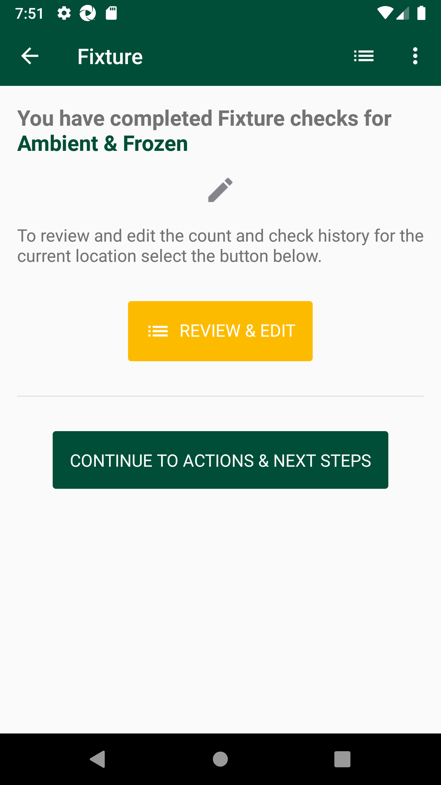
PassSMA-31447TC_01,06,11,16Verify user able to view Prompt at Location of DepartmentWhen I enter Username and Password for SMA Collegue userAnd I click on login button for SMAThen I click on 'stockMngmtText' on page 'HomePagePO_New'Then I click on "Prompted Counts"Then I click on "Fresh"Then I click on "Fixture"And I Verify Prompte is displayed at "Fixture"PassSMA-31447TC_01,06,11,16Verify user able to view Prompt at Location of DepartmentWhen I enter Username and Password for SMA Collegue userAnd I click on login button for SMAThen I click on 'stockMngmtText' on page 'HomePagePO_New'Then I click on "Prompted Counts"Then I click on "Market Street"Then I click on "Fixture"And I Verify Prompte is displayed at "Fixture"PassSMA-31447TC_01,06,11,16Verify user able to view Prompt at Location of DepartmentWhen I enter Username and Password for SMA Collegue userAnd I click on login button for SMAThen I click on 'stockMngmtText' on page 'HomePagePO_New'Then I click on "Prompted Counts"Then I click on "Services"Then I click on "Fixture"And I Verify Prompte is displayed at "Fixture"FailSMA-31447TC_02,07,12,17Verify user able to view at Location of Department 'location not completed' message and 'continue' buttonFailSMA-31447TC_02,07,12,17Verify user able to view at Location of Department 'location not completed' message and 'continue' buttonWhen I enter Username and Password for SMA Collegue userAnd I click on login button for SMAThen I click on 'stockMngmtText' on page 'HomePagePO_New'Then I click on "Prompted Counts"Then I click on "Ambient & Frozen"Then I click on "Off Shelf"And I Verify Prompt "Fixture location has not been completed." is displayed at "Off Shelf"com.morrisons.common.action.Hook.afterScenario(io.cucumber.java.Scenario)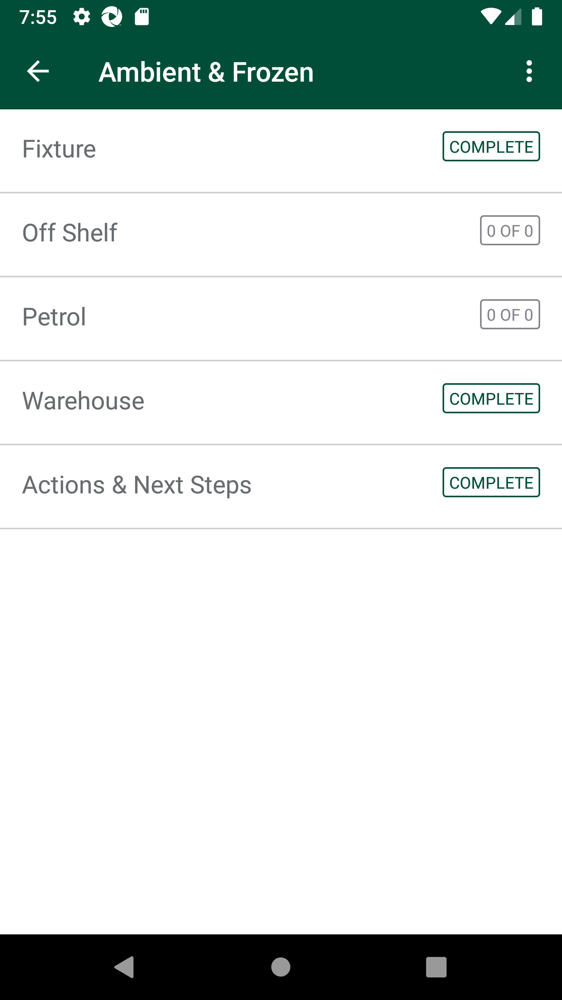
And I view and click on Button "CONTINUE TO FIXTURE"Step skippedAnd I Verify prompted item navigated to "Fixture"Step skippedFailSMA-31447TC_03,08,13,18 Verify user able to view at Location of Department 'location not completed' message and 'continue' buttonFailSMA-31447TC_03,08,13,18 Verify user able to view at Location of Department 'location not completed' message and 'continue' buttonWhen I enter Username and Password for SMA Collegue userAnd I click on login button for SMAThen I click on 'stockMngmtText' on page 'HomePagePO_New'Then I click on "Prompted Counts"Then I click on "Services"Then I click on "Petrol"And I Verify Prompt "Fixture location has not been completed." is displayed at "Petrol"com.morrisons.common.action.Hook.afterScenario(io.cucumber.java.Scenario)And I view and click on Button "CONTINUE TO FIXTURE"Step skippedAnd I Verify prompted item navigated to "Fixture"Step skippedFailSMA-31447TC_04,09,14,19Verify user able to view at Location of Department 'location not completed' message and 'continue' buttonFailSMA-31447TC_04,09,14,19Verify user able to view at Location of Department 'location not completed' message and 'continue' buttonWhen I enter Username and Password for SMA Collegue userAnd I click on login button for SMAThen I click on 'stockMngmtText' on page 'HomePagePO_New'Then I click on "Prompted Counts"Then I click on "Ambient & Frozen"Then I click on "Warehouse"And I Verify Prompt "Fixture location has not been completed." is displayed at "Warehouse"com.morrisons.common.action.Hook.afterScenario(io.cucumber.java.Scenario)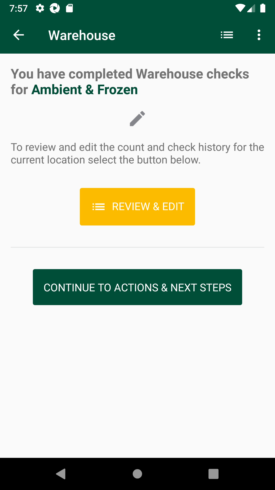
And I view and click on Button "CONTINUE TO FIXTURE"Step skippedAnd I Verify prompted item navigated to "Fixture"Step skippedFailSMA-31447TC_04,09,14,19Verify user able to view at Location of Department 'location not completed' message and 'continue' buttonWhen I enter Username and Password for SMA Collegue userAnd I click on login button for SMAThen I click on 'stockMngmtText' on page 'HomePagePO_New'Then I click on "Prompted Counts"Then I click on "Fresh"Then I click on "Warehouse"And I Verify Prompt "Fixture location has not been completed." is displayed at "Warehouse"com.morrisons.common.action.Hook.afterScenario(io.cucumber.java.Scenario)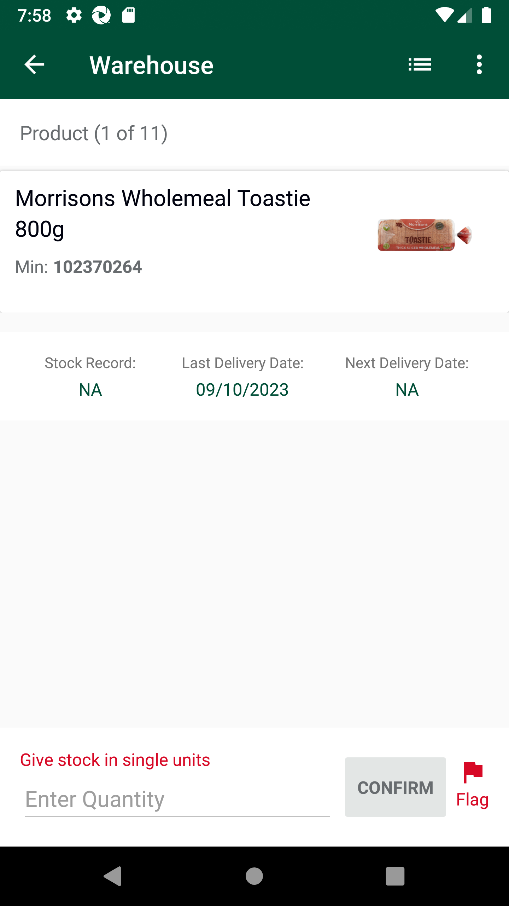
And I view and click on Button "CONTINUE TO FIXTURE"Step skippedAnd I Verify prompted item navigated to "Fixture"Step skippedPassSMA-31447TC_04,09,14,19Verify user able to view at Location of Department 'location not completed' message and 'continue' buttonWhen I enter Username and Password for SMA Collegue userAnd I click on login button for SMAThen I click on 'stockMngmtText' on page 'HomePagePO_New'Then I click on "Prompted Counts"Then I click on "Market Street"Then I click on "Warehouse"And I Verify Prompt "Fixture location has not been completed." is displayed at "Warehouse"And I view and click on Button "CONTINUE TO FIXTURE"And I Verify prompted item navigated to "Fixture"PassSMA-31447TC_04,09,14,19Verify user able to view at Location of Department 'location not completed' message and 'continue' buttonWhen I enter Username and Password for SMA Collegue userAnd I click on login button for SMAThen I click on 'stockMngmtText' on page 'HomePagePO_New'Then I click on "Prompted Counts"Then I click on "Services"Then I click on "Warehouse"And I Verify Prompt "Fixture location has not been completed." is displayed at "Warehouse"And I view and click on Button "CONTINUE TO FIXTURE"And I Verify prompted item navigated to "Fixture"FailTC_US31448 Department_Location Verify user should able to view blank history when No item is actioned in Prompted CountFailTC_US31448 Department_Location Verify user should able to view blank history when No item is actioned in Prompted CountWhen I enter Username and Password for SMA Collegue userAnd I click on login button for SMAThen I click on 'stockMngmtText' on page 'HomePagePO_New'Then I click on "Prompted Counts"Then I click on "Ambient & Frozen"Then I click on "Fixture"And I Verify Prompte is displayed at "Fixture"com.morrisons.common.action.Hook.afterScenario(io.cucumber.java.Scenario)Then I click on icon "Show List"Step skippedAnd I see "Fixture History"Step skippedAnd I Verify Prompt "No Items Available" is displayed at "Fixture"Step skippedFailTC_US31448 Department_Location Verify user should able to view blank history when No item is actioned in Prompted CountWhen I enter Username and Password for SMA Collegue userAnd I click on login button for SMAThen I click on 'stockMngmtText' on page 'HomePagePO_New'Then I click on "Prompted Counts"Then I click on "Fresh"Then I click on "Fixture"And I Verify Prompte is displayed at "Fixture"Then I click on icon "Show List"com.morrisons.common.action.Hook.afterScenario(io.cucumber.java.Scenario)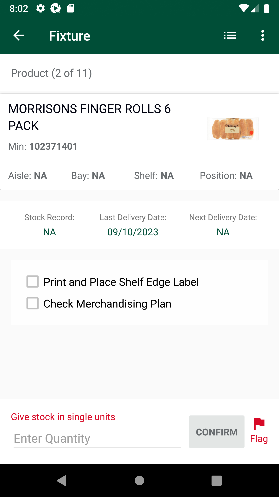
And I see "Fixture History"Step skippedAnd I Verify Prompt "No Items Available" is displayed at "Fixture"Step skippedFailTC_US31448 Department_Location Verify user should able to view blank history when No item is actioned in Prompted CountWhen I enter Username and Password for SMA Collegue userAnd I click on login button for SMAThen I click on 'stockMngmtText' on page 'HomePagePO_New'Then I click on "Prompted Counts"Then I click on "Market Street"Then I click on "Fixture"And I Verify Prompte is displayed at "Fixture"Then I click on icon "Show List"com.morrisons.common.action.Hook.afterScenario(io.cucumber.java.Scenario)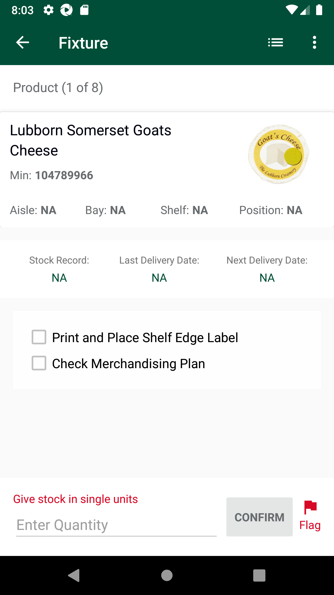
And I see "Fixture History"Step skippedAnd I Verify Prompt "No Items Available" is displayed at "Fixture"Step skippedFailTC_US31448 Department_Location Verify user should able to view blank history when No item is actioned in Prompted CountWhen I enter Username and Password for SMA Collegue userAnd I click on login button for SMAThen I click on 'stockMngmtText' on page 'HomePagePO_New'Then I click on "Prompted Counts"Then I click on "Services"Then I click on "Fixture"And I Verify Prompte is displayed at "Fixture"Then I click on icon "Show List"com.morrisons.common.action.Hook.afterScenario(io.cucumber.java.Scenario)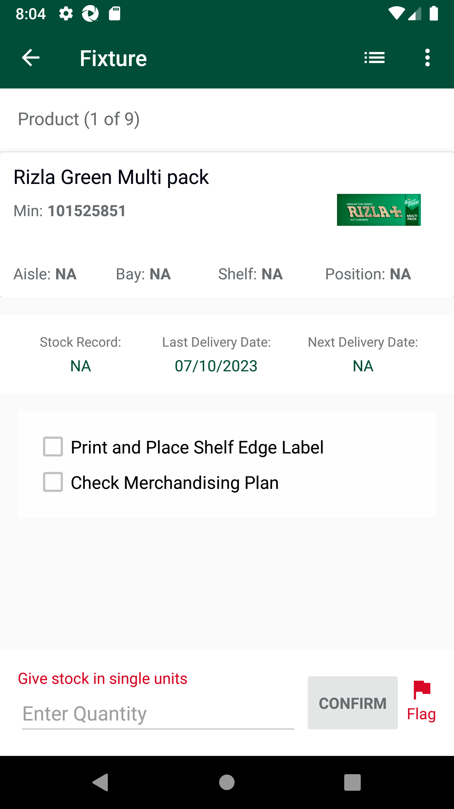
And I see "Fixture History"Step skippedAnd I Verify Prompt "No Items Available" is displayed at "Fixture"Step skippedFailTC_US31448 Department_Location Verify user should able to view blank history when no item is actioned in Prompted CountFailTC_US31448 Department_Location Verify user should able to view blank history when no item is actioned in Prompted CountWhen I enter Username and Password for SMA Collegue userAnd I click on login button for SMAThen I click on 'stockMngmtText' on page 'HomePagePO_New'Then I click on "Prompted Counts"Then I click on "Ambient & Frozen"Then I click on "Off Shelf"And I Verify Prompt "Fixture location has not been completed." is displayed at "Off Shelf"com.morrisons.common.action.Hook.afterScenario(io.cucumber.java.Scenario)And I see "CONTINUE TO FIXTURE"Step skippedThen I click on icon "Show List"Step skippedAnd I see "Off Shelf History"Step skippedAnd I Verify Prompt "No Items Available" is displayed at "Off Shelf"Step skippedFailTC_US31448 Department_Location Verify user should able to view blank history when no item is actioned in Prompted CountWhen I enter Username and Password for SMA Collegue userAnd I click on login button for SMAThen I click on 'stockMngmtText' on page 'HomePagePO_New'Then I click on "Prompted Counts"Then I click on "Ambient & Frozen"Then I click on "Warehouse"And I Verify Prompt "Fixture location has not been completed." is displayed at "Warehouse"com.morrisons.common.action.Hook.afterScenario(io.cucumber.java.Scenario)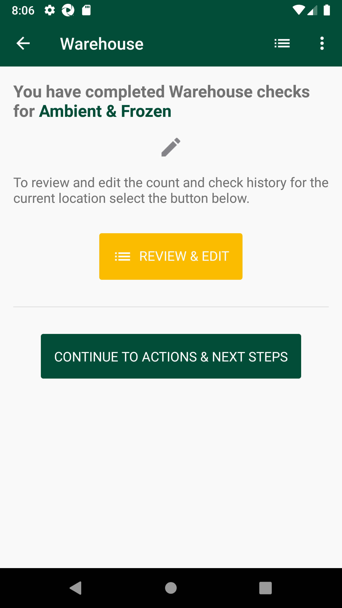
And I see "CONTINUE TO FIXTURE"Step skippedThen I click on icon "Show List"Step skippedAnd I see "Warehouse History"Step skippedAnd I Verify Prompt "No Items Available" is displayed at "Warehouse"Step skippedFailTC_US31448 Department_Location Verify user should able to view blank history when no item is actioned in Prompted CountWhen I enter Username and Password for SMA Collegue userAnd I click on login button for SMAThen I click on 'stockMngmtText' on page 'HomePagePO_New'Then I click on "Prompted Counts"Then I click on "Fresh"Then I click on "Warehouse"And I Verify Prompt "Fixture location has not been completed." is displayed at "Warehouse"com.morrisons.common.action.Hook.afterScenario(io.cucumber.java.Scenario)And I see "CONTINUE TO FIXTURE"Step skippedThen I click on icon "Show List"Step skippedAnd I see "Warehouse History"Step skippedAnd I Verify Prompt "No Items Available" is displayed at "Warehouse"Step skippedFailTC_US31448 Department_Location Verify user should able to view blank history when no item is actioned in Prompted CountWhen I enter Username and Password for SMA Collegue userAnd I click on login button for SMAThen I click on 'stockMngmtText' on page 'HomePagePO_New'Then I click on "Prompted Counts"Then I click on "Market Street"Then I click on "Warehouse"And I Verify Prompt "Fixture location has not been completed." is displayed at "Warehouse"And I see "CONTINUE TO FIXTURE"Then I click on icon "Show List"com.morrisons.common.action.Hook.afterScenario(io.cucumber.java.Scenario)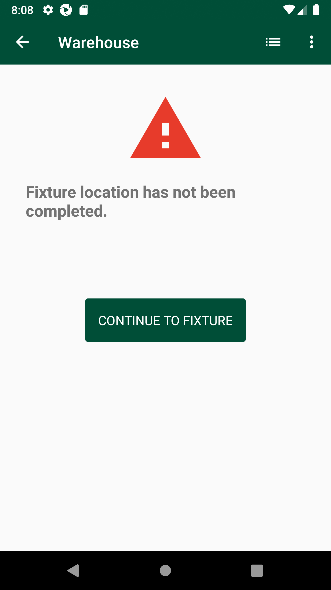
And I see "Warehouse History"Step skippedAnd I Verify Prompt "No Items Available" is displayed at "Warehouse"Step skippedFailTC_US31448 Department_Location Verify user should able to view blank history when no item is actioned in Prompted CountWhen I enter Username and Password for SMA Collegue userAnd I click on login button for SMAThen I click on 'stockMngmtText' on page 'HomePagePO_New'Then I click on "Prompted Counts"Then I click on "Services"Then I click on "Petrol"And I Verify Prompt "Fixture location has not been completed." is displayed at "Petrol"com.morrisons.common.action.Hook.afterScenario(io.cucumber.java.Scenario)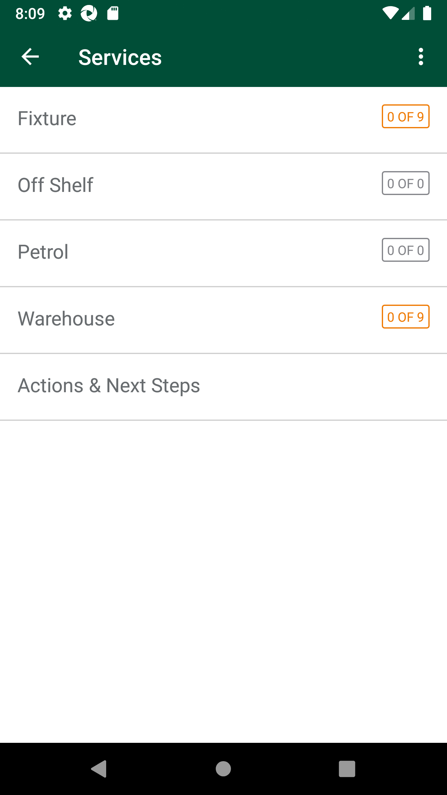
And I see "CONTINUE TO FIXTURE"Step skippedThen I click on icon "Show List"Step skippedAnd I see "Petrol History"Step skippedAnd I Verify Prompt "No Items Available" is displayed at "Petrol"Step skippedFailTC_US31448 Department_Location Verify user should able to view blank history when no item is actioned in Prompted CountWhen I enter Username and Password for SMA Collegue userAnd I click on login button for SMAThen I click on 'stockMngmtText' on page 'HomePagePO_New'Then I click on "Prompted Counts"Then I click on "Services"Then I click on "Warehouse"And I Verify Prompt "Fixture location has not been completed." is displayed at "Warehouse"And I see "CONTINUE TO FIXTURE"Then I click on icon "Show List"com.morrisons.common.action.Hook.afterScenario(io.cucumber.java.Scenario)And I see "Warehouse History"Step skippedAnd I Verify Prompt "No Items Available" is displayed at "Warehouse"Step skippedFailTC_US31448 Verify user is allowed to edit from history on completion few items at Location of DepartmentFailTC_US31448 Verify user is allowed to edit from history on completion few items at Location of DepartmentWhen I enter Username and Password for SMA Collegue userAnd I click on login button for SMAThen I click on 'stockMngmtText' on page 'HomePagePO_New'Then I click on "Prompted Counts"Then I click on "Fresh"Then I click on "Fixture"And I enter "10"Then I click on the Confirm ButtonThen I click on icon "Show List"com.morrisons.common.action.Hook.afterScenario(io.cucumber.java.Scenario)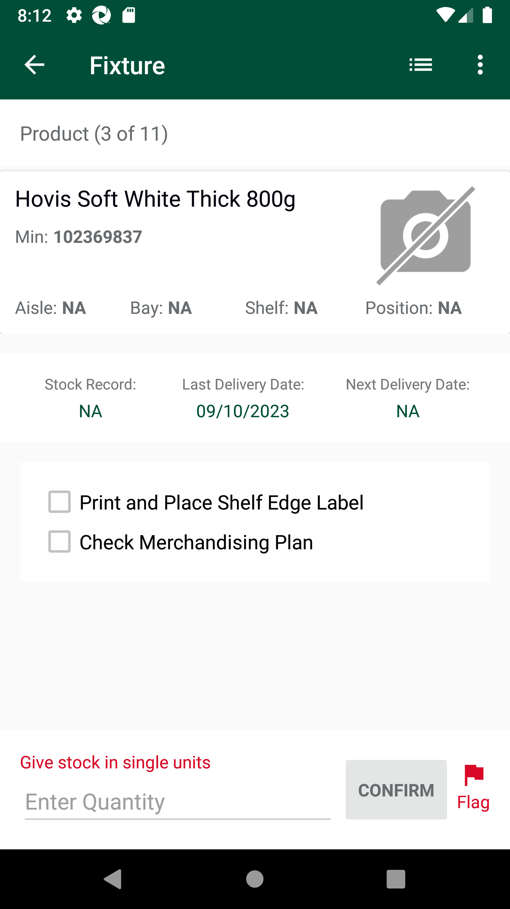
And I see "Fixture History"Step skippedAnd I select item from history list to editStep skippedAnd I click on Edit buttonStep skippedAnd I enter "200"Step skippedThen I click on the Confirm ButtonStep skippedAnd I verify "Fixture History" count Updated same as "200"Step skippedFailSMA-31447TC_21,22,23,24Verify user able to complete all prompts at Location for DepartmentFailSMA-31447TC_21,22,23,24Verify user able to complete all prompts at Location for DepartmentWhen I enter Username and Password for SMA Collegue userAnd I click on login button for SMAThen I click on 'stockMngmtText' on page 'HomePagePO_New'Then I click on "Prompted Counts"Then I click on "Ambient & Frozen"Then I click on "Fixture"And I verify Prompt Screen all detailscom.morrisons.common.action.Hook.afterScenario(io.cucumber.java.Scenario)And I enter "100"Step skippedAnd I mark product as flagStep skippedAnd I Verify Prompt "You have completed Fixture checks for Ambient & Frozen" is displayed at "Fixture"Step skippedAnd I click on Back ButtonStep skippedAnd I verify status as "COMPLETE"Step skippedPassSMA-31447TC_25,26,27,28 Verify user able to complete all prompts at Location for DepartmentPassSMA-31447TC_25,26,27,28 Verify user able to complete all prompts at Location for DepartmentWhen I enter Username and Password for SMA Collegue userAnd I click on login button for SMAThen I click on 'stockMngmtText' on page 'HomePagePO_New'Then I click on "Prompted Counts"Then I click on "Fresh"Then I click on "Fixture"And I verify Prompt Screen all detailsAnd I enter "999"Then I click on the Confirm ButtonAnd I complete all prompted itemsAnd I Verify Prompt "You have completed Fixture checks for Fresh" is displayed at "Fixture"And I click on Back ButtonAnd I verify status as "COMPLETE"PassSMA-31447TC_25,26,27,28 Verify user able to complete all prompts at Location for DepartmentWhen I enter Username and Password for SMA Collegue userAnd I click on login button for SMAThen I click on 'stockMngmtText' on page 'HomePagePO_New'Then I click on "Prompted Counts"Then I click on "Fresh"Then I click on "Warehouse"And I verify Prompt Screen all detailsAnd I enter "999"Then I click on the Confirm ButtonAnd I complete all prompted itemsAnd I Verify Prompt "You have completed Warehouse checks for Fresh" is displayed at "Warehouse"And I click on Back ButtonAnd I verify status as "COMPLETE"FailSMA-31447TC_29,30,31,32 Verify user able to complete all prompts at Location for DepartmentFailSMA-31447TC_29,30,31,32 Verify user able to complete all prompts at Location for DepartmentWhen I enter Username and Password for SMA Collegue userAnd I click on login button for SMAThen I click on 'stockMngmtText' on page 'HomePagePO_New'Then I click on "Prompted Counts"Then I click on "Market Street"Then I click on "Fixture"And I verify Prompt Screen all detailsAnd I enter "999"Then I click on the Confirm ButtonAnd I enter "999"Then I click on the Confirm ButtonAnd I Verify Prompt "You have completed Fixture checks for Market Street" is displayed at "Fixture"com.morrisons.common.action.Hook.afterScenario(io.cucumber.java.Scenario)And I click on Back ButtonStep skippedAnd I verify status as "COMPLETE"Step skippedFailSMA-31447TC_29,30,31,32 Verify user able to complete all prompts at Location for DepartmentWhen I enter Username and Password for SMA Collegue userAnd I click on login button for SMAThen I click on 'stockMngmtText' on page 'HomePagePO_New'Then I click on "Prompted Counts"Then I click on "Market Street"Then I click on "Warehouse"And I verify Prompt Screen all detailsAnd I enter "999"Then I click on the Confirm ButtonAnd I enter "999"com.morrisons.common.action.Hook.afterScenario(io.cucumber.java.Scenario)Then I click on the Confirm ButtonStep skippedAnd I Verify Prompt "You have completed Warehouse checks for Market Street" is displayed at "Warehouse"Step skippedAnd I click on Back ButtonStep skippedAnd I verify status as "COMPLETE"Step skippedFailSMA-31447TC_33,34,35,36 Verify user able to flag all prompts at Location for DepartmentFailSMA-31447TC_33,34,35,36 Verify user able to flag all prompts at Location for DepartmentWhen I enter Username and Password for SMA Collegue userAnd I click on login button for SMAThen I click on 'stockMngmtText' on page 'HomePagePO_New'Then I click on "Prompted Counts"Then I click on "Services"Then I click on "Fixture"And I mark product as flagAnd I Verify Prompt "You have completed Fixture checks for Services" is displayed at "Fixture"com.morrisons.common.action.Hook.afterScenario(io.cucumber.java.Scenario)And I click on Back ButtonStep skippedAnd I verify status as "COMPLETE"Step skippedFailSMA31446 TC_02 Department_Location Verify user is allow to edit any prompted item by updating stock counts or adding actionPassSMA31446 TC_02 Department_Location Verify user is allow to edit any prompted item by updating stock counts or adding actionWhen I enter Username and Password for SMA Collegue userAnd I click on login button for SMAThen I click on 'stockMngmtText' on page 'HomePagePO_New'Then I click on "Prompted Counts"Then I click on "Fresh"Then I click on "Fixture"Then I click on "REVIEW & EDIT"And I verify edit is allowed by updating Stock "920" at "Fixture"FailSMA31446 TC_02 Department_Location Verify user is allow to edit any prompted item by updating stock counts or adding actionWhen I enter Username and Password for SMA Collegue userAnd I click on login button for SMAThen I click on 'stockMngmtText' on page 'HomePagePO_New'Then I click on "Prompted Counts"Then I click on "Market Street"Then I click on "Fixture"Then I click on "REVIEW & EDIT"com.morrisons.common.action.Hook.afterScenario(io.cucumber.java.Scenario)And I verify edit is allowed by updating Stock "920" at "Fixture"Step skippedFailSMA31446 TC_03 Department_Location Verify user unflagged items should be allowed to update count or action from REVIEW & EDIT screenPassSMA31446 TC_03 Department_Location Verify user unflagged items should be allowed to update count or action from REVIEW & EDIT screenWhen I enter Username and Password for SMA Collegue userAnd I click on login button for SMAThen I click on 'stockMngmtText' on page 'HomePagePO_New'Then I click on "Prompted Counts"Then I click on "Fresh"Then I click on "Fixture"Then I click on "REVIEW & EDIT"And I verify unflagged items allowed to update count or actionFailSMA31446 TC_03 Department_Location Verify user unflagged items should be allowed to update count or action from REVIEW & EDIT screenWhen I enter Username and Password for SMA Collegue userAnd I click on login button for SMAThen I click on 'stockMngmtText' on page 'HomePagePO_New'Then I click on "Prompted Counts"Then I click on "Market Street"Then I click on "Fixture"Then I click on "REVIEW & EDIT"com.morrisons.common.action.Hook.afterScenario(io.cucumber.java.Scenario)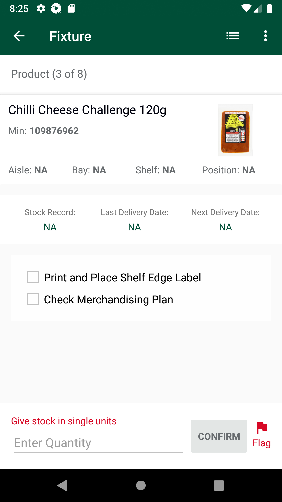
And I verify unflagged items allowed to update count or actionStep skippedFailSMA31446 TC_04 Department_Location Verify user Flagged items are allowed add action with reflagging in REVIEW & EDIT screenFailSMA31446 TC_04 Department_Location Verify user Flagged items are allowed add action with reflagging in REVIEW & EDIT screenWhen I enter Username and Password for SMA Collegue userAnd I click on login button for SMAThen I click on 'stockMngmtText' on page 'HomePagePO_New'Then I click on "Prompted Counts"Then I click on "Services"Then I click on "Fixture"Then I click on "REVIEW & EDIT"com.morrisons.common.action.Hook.afterScenario(io.cucumber.java.Scenario)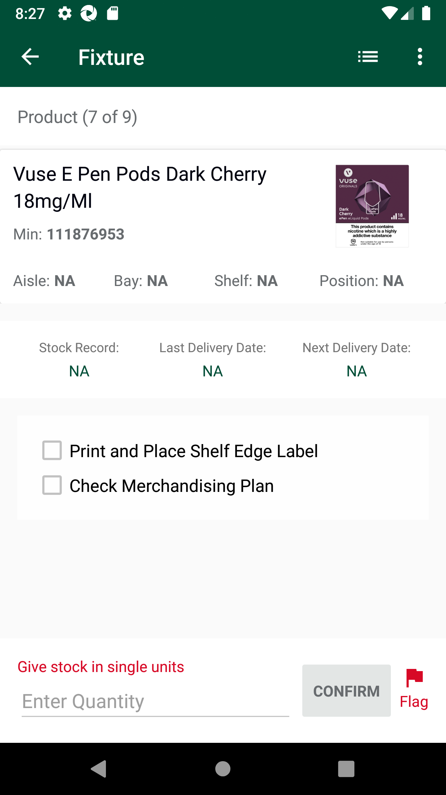
And I verify flagged items are allowed to add action with reflaggingStep skippedFailSMA31446 TC_04 Department_Location Verify user Flagged items are allowed add action with reflagging in REVIEW & EDIT screenWhen I enter Username and Password for SMA Collegue userAnd I click on login button for SMAThen I click on 'stockMngmtText' on page 'HomePagePO_New'Then I click on "Prompted Counts"Then I click on "Services"Then I click on "Warehouse"Then I click on "REVIEW & EDIT"com.morrisons.common.action.Hook.afterScenario(io.cucumber.java.Scenario)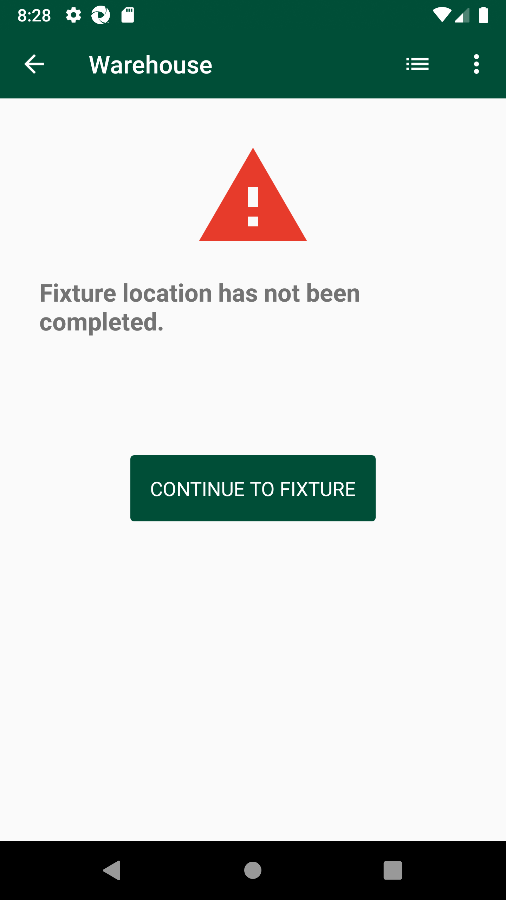
And I verify flagged items are allowed to add action with reflaggingStep skippedPassSMA31440TC_01 Location Verify user Able to view Summary tab throughout the day irrespective of timePassSMA31440TC_01 Location Verify user Able to view Summary tab throughout the day irrespective of timeWhen I enter Username and Password for SMA Collegue userAnd I click on login button for SMAThen I click on 'stockMngmtText' on page 'HomePagePO_New'Then I click on "Prompted Counts"And I verify "Summary" is displayedPassSMA31440TC_02 Location Verify user Able to view "Total Approvals" tab with total count of approvalsPassSMA31440TC_02 Location Verify user Able to view "Total Approvals" tab with total count of approvalsWhen I enter Username and Password for SMA Collegue userAnd I click on login button for SMAThen I click on 'stockMngmtText' on page 'HomePagePO_New'Then I click on "Prompted Counts"And I verify "Summary" is displayedThen I click on "Summary"And I verify Summary screen UIAnd I verify "Total Approvals" is displayedFailSMA31440TC_03 Location Verify user Able to view department list with its outstanding count i.e., 1 of 2 (Amber colour), 2 of 2 (Green Colour)FailSMA31440TC_03 Location Verify user Able to view department list with its outstanding count i.e., 1 of 2 (Amber colour), 2 of 2 (Green Colour)When I enter Username and Password for SMA Collegue userAnd I click on login button for SMAThen I click on 'stockMngmtText' on page 'HomePagePO_New'Then I click on "Prompted Counts"And I verify Location is displayedStep undefinedThen I click on "Summary"Step skippedAnd I verify Summary screen UIStep skippedAnd I view and click on Button "Total Approvals"Step skippedAnd I verify Department list of outstanding count is displayedStep skippedPassSMA31440TC_04 Location Verify user Able to view total items list count at the top which needs manager approvalPassSMA31440TC_04 Location Verify user Able to view total items list count at the top which needs manager approvalWhen I enter Username and Password for SMA Manager userAnd I click on login button for SMAThen I click on 'stockMngmtText' on page 'HomePagePO_New'Then I click on "Prompted Counts"And I verify "Summary" is displayedThen I click on "Summary"And I verify Summary screen UIAnd I view and click on Button "Total Approvals"And I verify Department list of outstanding count is displayedPassSMA31440TC_05 Location Verify user Able to view list of prompted items which requires manager approval i.e. Adjustment value>=200 poundsPassSMA31440TC_05 Location Verify user Able to view list of prompted items which requires manager approval i.e. Adjustment value>=200 poundsWhen I enter Username and Password for SMA Manager userAnd I click on login button for SMAThen I click on 'stockMngmtText' on page 'HomePagePO_New'Then I click on "Prompted Counts"And I verify "Summary" is displayedThen I click on "Summary"And I verify Summary screen UIAnd I view and click on Button "Total Approvals"And I verify Department list of outstanding count is displayedThen I click on "Market Street"And I verify item which need manager approvalsFailSMA31440TC_06 Location Verify user Able to approve prompted item from the listFailSMA31440TC_06 Location Verify user Able to approve prompted item from the listWhen I enter Username and Password for SMA Manager userAnd I click on login button for SMAThen I click on 'stockMngmtText' on page 'HomePagePO_New'Then I click on "Prompted Counts"And I verify "Summary" is displayedThen I click on "Summary"And I verify Summary screen UIAnd I view and click on Button "Total Approvals"And I verify Department list of outstanding count is displayedThen I click on "Fresh"And I verify item which need manager approvalsAnd I select and Approve prompted item from listcom.morrisons.common.action.Hook.afterScenario(io.cucumber.java.Scenario)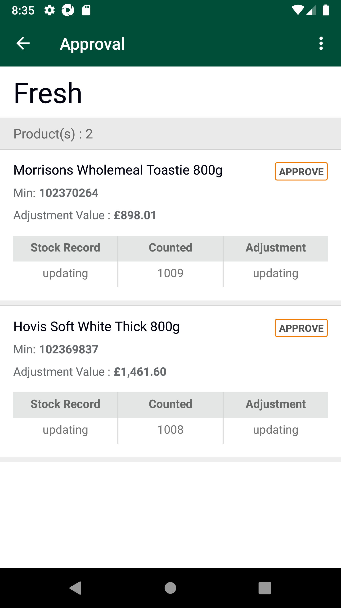
FailSMA31440TC_07 Location Verify user Allow to edit count at any location before approvalFailSMA31440TC_07 Location Verify user Allow to edit count at any location before approvalWhen I enter Username and Password for SMA Manager userAnd I click on login button for SMAThen I click on 'stockMngmtText' on page 'HomePagePO_New'Then I click on "Prompted Counts"And I verify "Summary" is displayedThen I click on "Summary"And I verify Summary screen UIAnd I view and click on Button "Total Approvals"And I verify Department list of outstanding count is displayedThen I click on "Market Street"And I verify item which need manager approvalsAnd I edit count of any "Fixture" before approvalcom.morrisons.common.action.Hook.afterScenario(io.cucumber.java.Scenario)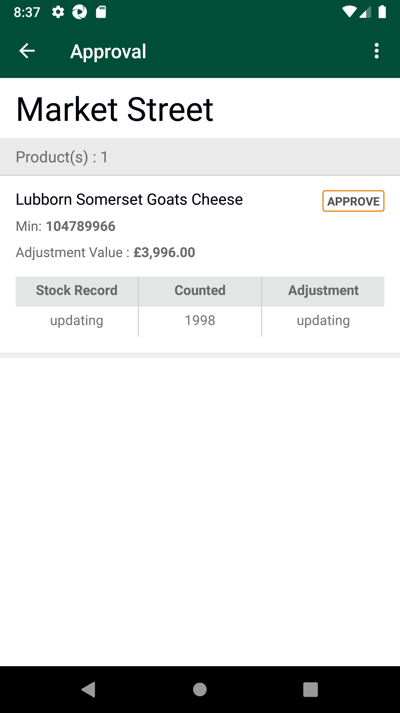
FailSMA31440TC_09 Location Verify user Able to view the approved items at the bottom after approvalFailSMA31440TC_09 Location Verify user Able to view the approved items at the bottom after approvalWhen I enter Username and Password for SMA Collegue userAnd I click on login button for SMAThen I click on 'stockMngmtText' on page 'HomePagePO_New'Then I click on "Prompted Counts"And I verify "Summary" is displayedThen I click on "Summary"And I verify Summary screen UIAnd I view and click on Button "Total Approvals"And I verify Department list of outstanding count is displayedThen I click on "Fresh"And I verify approved items displayedcom.morrisons.common.action.Hook.afterScenario(io.cucumber.java.Scenario)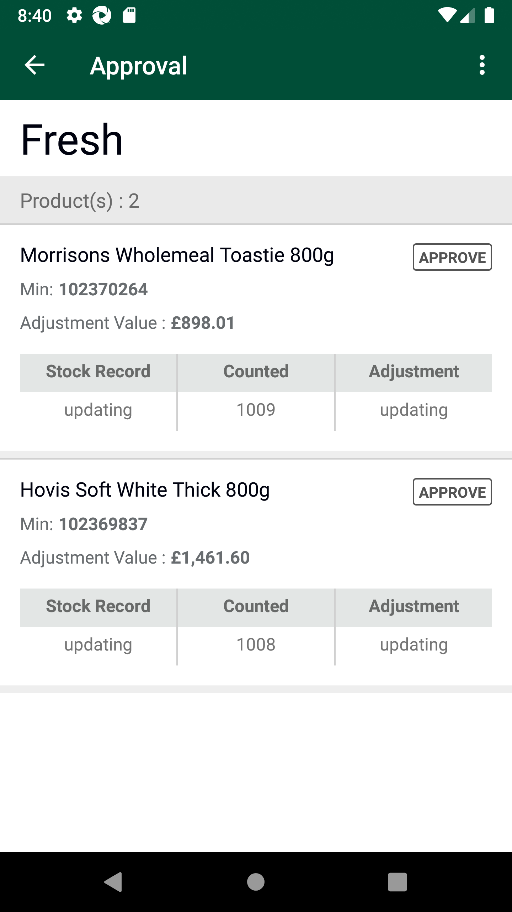
FailSMA31440TC_11 Location Verify After 9.45AM item details display in View ModeFailSMA31440TC_11 Location Verify After 9.45AM item details display in View ModeWhen I enter Username and Password for SMA Manager usercom.morrisons.common.action.Hook.afterScenario(io.cucumber.java.Scenario)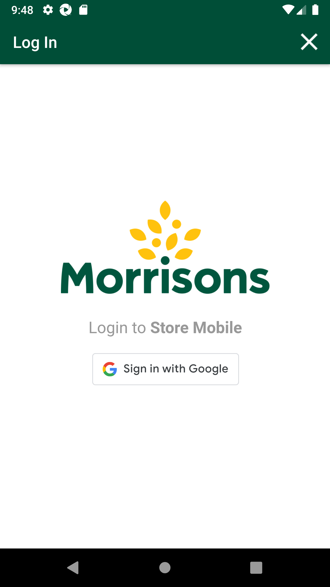
And I click on login button for SMAStep skippedThen I click on 'stockMngmtText' on page 'HomePagePO_New'Step skippedThen I click on "Prompted Counts"Step skippedAnd I verify "Summary" is displayedStep skippedThen I click on "Summary"Step skippedAnd I verify Summary screen UIStep skippedAnd I view and click on Button "Total Approvals"Step skippedAnd I verify Department list of outstanding count is displayedStep skippedThen I click on "Fresh"Step skippedAnd I verify item details display in View ModeStep skippedFailSMA31437TC_01Verify Summary Card details for Department_Location department level reviewFailSMA31437TC_01Verify Summary Card details for Department_Location department level reviewWhen I enter Username and Password for SMA Collegue userAnd I click on login button for SMAThen I click on 'stockMngmtText' on page 'HomePagePO_New'Then I click on "Prompted Counts"And I verify "Summary" is displayedThen I click on "Summary"And I verify Summary screen UIThen I select Summary Card for "Fresh"And I verify all the list of products with Total count at the top of the screenAnd I verify product list item description, MIN, Stock count, Adjustment valueAnd I verify Adjustment value calculation agaist current stock and updated countcom.morrisons.common.action.Hook.afterScenario(io.cucumber.java.Scenario)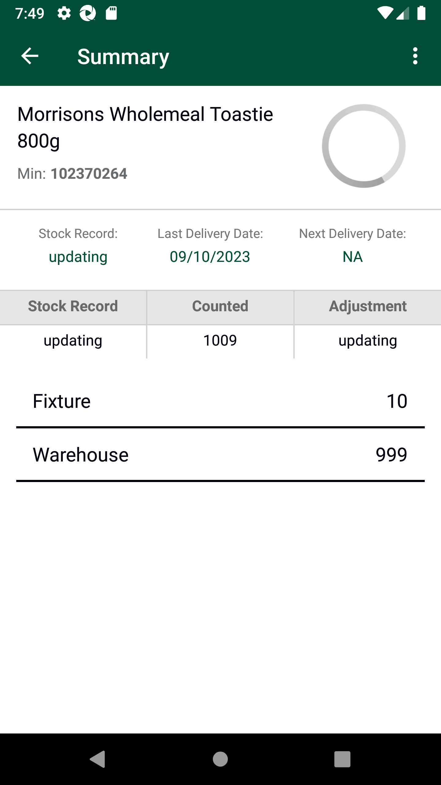
And I verify updated Adjustment back on main screen after count is updated at department levelStep skipped
-
org.openqa.selenium.NoSuchElementException
27 tests
org.openqa.selenium.NoSuchElementException
27 failedStatus Timestamp TestName Fail 14:15:11 PM And I Verify Prompte is displayed at "Fixture" Verify Prompted Counts functionality.SMA-31447TC_01,06,11,16Verify user able to view Prompt at Location of Department.And I Verify Prompte is displayed at "Fixture"Fail 14:19:17 PM And I Verify Prompt "Fixture location has not been completed." is displayed at "Off Shelf" Verify Prompted Counts functionality.SMA-31447TC_02,07,12,17Verify user able to view at Location of Department 'location not completed' message and 'continue' button.And I Verify Prompt "Fixture location has not been completed." is displayed at "Off Shelf"Fail 14:20:18 PM And I Verify Prompt "Fixture location has not been completed." is displayed at "Petrol" Verify Prompted Counts functionality.SMA-31447TC_03,08,13,18 Verify user able to view at Location of Department 'location not completed' message and 'continue' button.And I Verify Prompt "Fixture location has not been completed." is displayed at "Petrol"Fail 14:21:19 PM And I Verify Prompt "Fixture location has not been completed." is displayed at "Warehouse" Verify Prompted Counts functionality.SMA-31447TC_04,09,14,19Verify user able to view at Location of Department 'location not completed' message and 'continue' button.And I Verify Prompt "Fixture location has not been completed." is displayed at "Warehouse"Fail 14:22:19 PM And I Verify Prompt "Fixture location has not been completed." is displayed at "Warehouse" Verify Prompted Counts functionality.SMA-31447TC_04,09,14,19Verify user able to view at Location of Department 'location not completed' message and 'continue' button.And I Verify Prompt "Fixture location has not been completed." is displayed at "Warehouse"Fail 14:24:44 PM And I Verify Prompte is displayed at "Fixture" Verify Prompted Counts functionality.TC_US31448 Department_Location Verify user should able to view blank history when No item is actioned in Prompted Count.And I Verify Prompte is displayed at "Fixture"Fail 14:25:51 PM Then I click on icon "Show List" Verify Prompted Counts functionality.TC_US31448 Department_Location Verify user should able to view blank history when No item is actioned in Prompted Count.Then I click on icon "Show List"Fail 14:26:55 PM Then I click on icon "Show List" Verify Prompted Counts functionality.TC_US31448 Department_Location Verify user should able to view blank history when No item is actioned in Prompted Count.Then I click on icon "Show List"Fail 14:28:19 PM Then I click on icon "Show List" Verify Prompted Counts functionality.TC_US31448 Department_Location Verify user should able to view blank history when No item is actioned in Prompted Count.Then I click on icon "Show List"Fail 14:29:23 PM And I Verify Prompt "Fixture location has not been completed." is displayed at "Off Shelf" Verify Prompted Counts functionality.TC_US31448 Department_Location Verify user should able to view blank history when no item is actioned in Prompted Count.And I Verify Prompt "Fixture location has not been completed." is displayed at "Off Shelf"Fail 14:30:24 PM And I Verify Prompt "Fixture location has not been completed." is displayed at "Warehouse" Verify Prompted Counts functionality.TC_US31448 Department_Location Verify user should able to view blank history when no item is actioned in Prompted Count.And I Verify Prompt "Fixture location has not been completed." is displayed at "Warehouse"Fail 14:31:25 PM And I Verify Prompt "Fixture location has not been completed." is displayed at "Warehouse" Verify Prompted Counts functionality.TC_US31448 Department_Location Verify user should able to view blank history when no item is actioned in Prompted Count.And I Verify Prompt "Fixture location has not been completed." is displayed at "Warehouse"Fail 14:32:25 PM Then I click on icon "Show List" Verify Prompted Counts functionality.TC_US31448 Department_Location Verify user should able to view blank history when no item is actioned in Prompted Count.Then I click on icon "Show List"Fail 14:33:28 PM And I Verify Prompt "Fixture location has not been completed." is displayed at "Petrol" Verify Prompted Counts functionality.TC_US31448 Department_Location Verify user should able to view blank history when no item is actioned in Prompted Count.And I Verify Prompt "Fixture location has not been completed." is displayed at "Petrol"Fail 14:34:29 PM Then I click on icon "Show List" Verify Prompted Counts functionality.TC_US31448 Department_Location Verify user should able to view blank history when no item is actioned in Prompted Count.Then I click on icon "Show List"Fail 14:35:35 PM Then I click on icon "Show List" Verify Prompted Counts functionality.TC_US31448 Verify user is allowed to edit from history on completion few items at Location of Department.Then I click on icon "Show List"Fail 14:36:36 PM And I verify Prompt Screen all details Verify Prompted Counts functionality.SMA-31447TC_21,22,23,24Verify user able to complete all prompts at Location for Department.And I verify Prompt Screen all detailsFail 14:41:23 PM And I Verify Prompt "You have completed Fixture checks for Market Street" is displayed at "Fixture" Verify Prompted Counts functionality.SMA-31447TC_29,30,31,32 Verify user able to complete all prompts at Location for Department.And I Verify Prompt "You have completed Fixture checks for Market Street" is displayed at "Fixture"Fail 14:43:08 PM And I enter "999" Verify Prompted Counts functionality.SMA-31447TC_29,30,31,32 Verify user able to complete all prompts at Location for Department.And I enter "999"Fail 14:44:26 PM And I Verify Prompt "You have completed Fixture checks for Services" is displayed at "Fixture" Verify Prompted Counts functionality.SMA-31447TC_33,34,35,36 Verify user able to flag all prompts at Location for Department.And I Verify Prompt "You have completed Fixture checks for Services" is displayed at "Fixture"Fail 14:46:29 PM Then I click on "REVIEW & EDIT" Verify Prompted Counts functionality.SMA31446 TC_02 Department_Location Verify user is allow to edit any prompted item by updating stock counts or adding action.Then I click on "REVIEW & EDIT"Fail 14:48:56 PM Then I click on "REVIEW & EDIT" Verify Prompted Counts functionality.SMA31446 TC_03 Department_Location Verify user unflagged items should be allowed to update count or action from REVIEW & EDIT screen.Then I click on "REVIEW & EDIT"Fail 14:50:16 PM Then I click on "REVIEW & EDIT" Verify Prompted Counts functionality.SMA31446 TC_04 Department_Location Verify user Flagged items are allowed add action with reflagging in REVIEW & EDIT screen.Then I click on "REVIEW & EDIT"Fail 14:51:37 PM Then I click on "REVIEW & EDIT" Verify Prompted Counts functionality.SMA31446 TC_04 Department_Location Verify user Flagged items are allowed add action with reflagging in REVIEW & EDIT screen.Then I click on "REVIEW & EDIT"Fail 14:59:20 PM And I select and Approve prompted item from list Verify Prompted Counts functionality.SMA31440TC_06 Location Verify user Able to approve prompted item from the list.And I select and Approve prompted item from listFail 15:01:30 PM And I edit count of any "Fixture" before approval Verify Prompted Counts functionality.SMA31440TC_07 Location Verify user Allow to edit count at any location before approval.And I edit count of any "Fixture" before approvalFail 15:03:20 PM And I verify approved items displayed Verify Prompted Counts functionality.SMA31440TC_09 Location Verify user Able to view the approved items at the bottom after approval.And I verify approved items displayed -
org.openqa.selenium.StaleElementReferenceException
1 tests
org.openqa.selenium.StaleElementReferenceException
1 failedStatus Timestamp TestName Fail 15:06:33 PM When I enter Username and Password for SMA Manager user Verify Prompted Counts functionality.SMA31440TC_11 Location Verify After 9.45AM item details display in View Mode.When I enter Username and Password for SMA Manager user -
java.lang.NumberFormatException
1 tests
java.lang.NumberFormatException
1 failedStatus Timestamp TestName Fail 15:10:20 PM And I verify Adjustment value calculation agaist current stock and updated count Verify Prompted Counts functionality.SMA31437TC_01Verify Summary Card details for Department_Location department level review.And I verify Adjustment value calculation agaist current stock and updated count
-
@regression
49 tests
@regression
18 passed 31 failedStatus Timestamp TestName Fail 14:10:01 PM Verify Prompted Counts functionality Pass 14:10:01 PM TO CHANGE THE DEVICE TIMINGS AS REQUIRED Verify Prompted Counts functionality.TO CHANGE THE DEVICE TIMINGS AS REQUIREDPass 14:12:26 PM Create SOH for items Verify Prompted Counts functionality.Create SOH for itemsPass 14:12:55 PM SMA-31447TC_02 Verify user able to voew all locations and departments Verify Prompted Counts functionality.SMA-31447TC_02 Verify user able to voew all locations and departmentsFail 14:14:06 PM SMA-31447TC_01,06,11,16Verify user able to view Prompt at Location of Department Verify Prompted Counts functionality.SMA-31447TC_01,06,11,16Verify user able to view Prompt at Location of DepartmentPass 14:15:36 PM SMA-31447TC_01,06,11,16Verify user able to view Prompt at Location of Department Verify Prompted Counts functionality.SMA-31447TC_01,06,11,16Verify user able to view Prompt at Location of DepartmentPass 14:16:46 PM SMA-31447TC_01,06,11,16Verify user able to view Prompt at Location of Department Verify Prompted Counts functionality.SMA-31447TC_01,06,11,16Verify user able to view Prompt at Location of DepartmentPass 14:17:46 PM SMA-31447TC_01,06,11,16Verify user able to view Prompt at Location of Department Verify Prompted Counts functionality.SMA-31447TC_01,06,11,16Verify user able to view Prompt at Location of DepartmentFail 14:18:36 PM SMA-31447TC_02,07,12,17Verify user able to view at Location of Department 'location not completed' message and 'continue' button Verify Prompted Counts functionality.SMA-31447TC_02,07,12,17Verify user able to view at Location of Department 'location not completed' message and 'continue' buttonFail 14:19:39 PM SMA-31447TC_03,08,13,18 Verify user able to view at Location of Department 'location not completed' message and 'continue' button Verify Prompted Counts functionality.SMA-31447TC_03,08,13,18 Verify user able to view at Location of Department 'location not completed' message and 'continue' buttonFail 14:20:40 PM SMA-31447TC_04,09,14,19Verify user able to view at Location of Department 'location not completed' message and 'continue' button Verify Prompted Counts functionality.SMA-31447TC_04,09,14,19Verify user able to view at Location of Department 'location not completed' message and 'continue' buttonFail 14:21:41 PM SMA-31447TC_04,09,14,19Verify user able to view at Location of Department 'location not completed' message and 'continue' button Verify Prompted Counts functionality.SMA-31447TC_04,09,14,19Verify user able to view at Location of Department 'location not completed' message and 'continue' buttonPass 14:22:41 PM SMA-31447TC_04,09,14,19Verify user able to view at Location of Department 'location not completed' message and 'continue' button Verify Prompted Counts functionality.SMA-31447TC_04,09,14,19Verify user able to view at Location of Department 'location not completed' message and 'continue' buttonPass 14:23:21 PM SMA-31447TC_04,09,14,19Verify user able to view at Location of Department 'location not completed' message and 'continue' button Verify Prompted Counts functionality.SMA-31447TC_04,09,14,19Verify user able to view at Location of Department 'location not completed' message and 'continue' buttonFail 14:24:03 PM TC_US31448 Department_Location Verify user should able to view blank history when No item is actioned in Prompted Count Verify Prompted Counts functionality.TC_US31448 Department_Location Verify user should able to view blank history when No item is actioned in Prompted CountFail 14:25:08 PM TC_US31448 Department_Location Verify user should able to view blank history when No item is actioned in Prompted Count Verify Prompted Counts functionality.TC_US31448 Department_Location Verify user should able to view blank history when No item is actioned in Prompted CountFail 14:26:14 PM TC_US31448 Department_Location Verify user should able to view blank history when No item is actioned in Prompted Count Verify Prompted Counts functionality.TC_US31448 Department_Location Verify user should able to view blank history when No item is actioned in Prompted CountFail 14:27:19 PM TC_US31448 Department_Location Verify user should able to view blank history when No item is actioned in Prompted Count Verify Prompted Counts functionality.TC_US31448 Department_Location Verify user should able to view blank history when No item is actioned in Prompted CountFail 14:28:42 PM TC_US31448 Department_Location Verify user should able to view blank history when no item is actioned in Prompted Count Verify Prompted Counts functionality.TC_US31448 Department_Location Verify user should able to view blank history when no item is actioned in Prompted CountFail 14:29:45 PM TC_US31448 Department_Location Verify user should able to view blank history when no item is actioned in Prompted Count Verify Prompted Counts functionality.TC_US31448 Department_Location Verify user should able to view blank history when no item is actioned in Prompted CountFail 14:30:46 PM TC_US31448 Department_Location Verify user should able to view blank history when no item is actioned in Prompted Count Verify Prompted Counts functionality.TC_US31448 Department_Location Verify user should able to view blank history when no item is actioned in Prompted CountFail 14:31:47 PM TC_US31448 Department_Location Verify user should able to view blank history when no item is actioned in Prompted Count Verify Prompted Counts functionality.TC_US31448 Department_Location Verify user should able to view blank history when no item is actioned in Prompted CountFail 14:32:49 PM TC_US31448 Department_Location Verify user should able to view blank history when no item is actioned in Prompted Count Verify Prompted Counts functionality.TC_US31448 Department_Location Verify user should able to view blank history when no item is actioned in Prompted CountFail 14:33:50 PM TC_US31448 Department_Location Verify user should able to view blank history when no item is actioned in Prompted Count Verify Prompted Counts functionality.TC_US31448 Department_Location Verify user should able to view blank history when no item is actioned in Prompted CountFail 14:34:52 PM TC_US31448 Verify user is allowed to edit from history on completion few items at Location of Department Verify Prompted Counts functionality.TC_US31448 Verify user is allowed to edit from history on completion few items at Location of DepartmentFail 14:35:58 PM SMA-31447TC_21,22,23,24Verify user able to complete all prompts at Location for Department Verify Prompted Counts functionality.SMA-31447TC_21,22,23,24Verify user able to complete all prompts at Location for DepartmentPass 14:36:58 PM SMA-31447TC_25,26,27,28 Verify user able to complete all prompts at Location for Department Verify Prompted Counts functionality.SMA-31447TC_25,26,27,28 Verify user able to complete all prompts at Location for DepartmentPass 14:38:20 PM SMA-31447TC_25,26,27,28 Verify user able to complete all prompts at Location for Department Verify Prompted Counts functionality.SMA-31447TC_25,26,27,28 Verify user able to complete all prompts at Location for DepartmentFail 14:40:30 PM SMA-31447TC_29,30,31,32 Verify user able to complete all prompts at Location for Department Verify Prompted Counts functionality.SMA-31447TC_29,30,31,32 Verify user able to complete all prompts at Location for DepartmentFail 14:41:44 PM SMA-31447TC_29,30,31,32 Verify user able to complete all prompts at Location for Department Verify Prompted Counts functionality.SMA-31447TC_29,30,31,32 Verify user able to complete all prompts at Location for DepartmentFail 14:43:30 PM SMA-31447TC_33,34,35,36 Verify user able to flag all prompts at Location for Department Verify Prompted Counts functionality.SMA-31447TC_33,34,35,36 Verify user able to flag all prompts at Location for DepartmentPass 14:44:48 PM SMA31446 TC_02 Department_Location Verify user is allow to edit any prompted item by updating stock counts or adding action Verify Prompted Counts functionality.SMA31446 TC_02 Department_Location Verify user is allow to edit any prompted item by updating stock counts or adding actionFail 14:45:51 PM SMA31446 TC_02 Department_Location Verify user is allow to edit any prompted item by updating stock counts or adding action Verify Prompted Counts functionality.SMA31446 TC_02 Department_Location Verify user is allow to edit any prompted item by updating stock counts or adding actionPass 14:47:12 PM SMA31446 TC_03 Department_Location Verify user unflagged items should be allowed to update count or action from REVIEW & EDIT screen Verify Prompted Counts functionality.SMA31446 TC_03 Department_Location Verify user unflagged items should be allowed to update count or action from REVIEW & EDIT screenFail 14:48:16 PM SMA31446 TC_03 Department_Location Verify user unflagged items should be allowed to update count or action from REVIEW & EDIT screen Verify Prompted Counts functionality.SMA31446 TC_03 Department_Location Verify user unflagged items should be allowed to update count or action from REVIEW & EDIT screenFail 14:49:38 PM SMA31446 TC_04 Department_Location Verify user Flagged items are allowed add action with reflagging in REVIEW & EDIT screen Verify Prompted Counts functionality.SMA31446 TC_04 Department_Location Verify user Flagged items are allowed add action with reflagging in REVIEW & EDIT screenFail 14:50:59 PM SMA31446 TC_04 Department_Location Verify user Flagged items are allowed add action with reflagging in REVIEW & EDIT screen Verify Prompted Counts functionality.SMA31446 TC_04 Department_Location Verify user Flagged items are allowed add action with reflagging in REVIEW & EDIT screenPass 14:52:19 PM SMA31440TC_01 Location Verify user Able to view Summary tab throughout the day irrespective of time Verify Prompted Counts functionality.SMA31440TC_01 Location Verify user Able to view Summary tab throughout the day irrespective of timePass 14:52:57 PM SMA31440TC_02 Location Verify user Able to view "Total Approvals" tab with total count of approvals Verify Prompted Counts functionality.SMA31440TC_02 Location Verify user Able to view "Total Approvals" tab with total count of approvalsFail 14:54:14 PM SMA31440TC_03 Location Verify user Able to view department list with its outstanding count i.e., 1 of 2 (Amber colour), 2 of 2 (Green Colour) Verify Prompted Counts functionality.SMA31440TC_03 Location Verify user Able to view department list with its outstanding count i.e., 1 of 2 (Amber colour), 2 of 2 (Green Colour)Pass 14:54:49 PM SMA31440TC_04 Location Verify user Able to view total items list count at the top which needs manager approval Verify Prompted Counts functionality.SMA31440TC_04 Location Verify user Able to view total items list count at the top which needs manager approvalPass 14:56:07 PM SMA31440TC_05 Location Verify user Able to view list of prompted items which requires manager approval i.e. Adjustment value>=200 pounds Verify Prompted Counts functionality.SMA31440TC_05 Location Verify user Able to view list of prompted items which requires manager approval i.e. Adjustment value>=200 poundsFail 14:57:43 PM SMA31440TC_06 Location Verify user Able to approve prompted item from the list Verify Prompted Counts functionality.SMA31440TC_06 Location Verify user Able to approve prompted item from the listFail 14:59:43 PM SMA31440TC_07 Location Verify user Allow to edit count at any location before approval Verify Prompted Counts functionality.SMA31440TC_07 Location Verify user Allow to edit count at any location before approvalFail 15:01:53 PM SMA31440TC_09 Location Verify user Able to view the approved items at the bottom after approval Verify Prompted Counts functionality.SMA31440TC_09 Location Verify user Able to view the approved items at the bottom after approvalPass 15:04:06 PM TO CHANGE THE DEVICE TIMINGS AS REQUIRED Verify Prompted Counts functionality.TO CHANGE THE DEVICE TIMINGS AS REQUIREDFail 15:06:14 PM SMA31440TC_11 Location Verify After 9.45AM item details display in View Mode Verify Prompted Counts functionality.SMA31440TC_11 Location Verify After 9.45AM item details display in View ModePass 15:06:44 PM TO CHANGE THE DEVICE TIMINGS AS REQUIRED Verify Prompted Counts functionality.TO CHANGE THE DEVICE TIMINGS AS REQUIREDFail 15:08:55 PM SMA31437TC_01Verify Summary Card details for Department_Location department level review Verify Prompted Counts functionality.SMA31437TC_01Verify Summary Card details for Department_Location department level review -
@PromptCntRun
2 tests
@PromptCntRun
2 passedStatus Timestamp TestName Pass 14:12:26 PM Create SOH for items Verify Prompted Counts functionality.Create SOH for itemsPass 14:12:26 PM Create SOH for items Verify Prompted Counts functionality.Create SOH for items -
@Newprompted_count1
49 tests
@Newprompted_count1
18 passed 31 failedStatus Timestamp TestName Fail 14:10:01 PM Verify Prompted Counts functionality Pass 14:10:01 PM TO CHANGE THE DEVICE TIMINGS AS REQUIRED Verify Prompted Counts functionality.TO CHANGE THE DEVICE TIMINGS AS REQUIREDPass 14:12:26 PM Create SOH for items Verify Prompted Counts functionality.Create SOH for itemsPass 14:12:55 PM SMA-31447TC_02 Verify user able to voew all locations and departments Verify Prompted Counts functionality.SMA-31447TC_02 Verify user able to voew all locations and departmentsFail 14:14:06 PM SMA-31447TC_01,06,11,16Verify user able to view Prompt at Location of Department Verify Prompted Counts functionality.SMA-31447TC_01,06,11,16Verify user able to view Prompt at Location of DepartmentPass 14:15:36 PM SMA-31447TC_01,06,11,16Verify user able to view Prompt at Location of Department Verify Prompted Counts functionality.SMA-31447TC_01,06,11,16Verify user able to view Prompt at Location of DepartmentPass 14:16:46 PM SMA-31447TC_01,06,11,16Verify user able to view Prompt at Location of Department Verify Prompted Counts functionality.SMA-31447TC_01,06,11,16Verify user able to view Prompt at Location of DepartmentPass 14:17:46 PM SMA-31447TC_01,06,11,16Verify user able to view Prompt at Location of Department Verify Prompted Counts functionality.SMA-31447TC_01,06,11,16Verify user able to view Prompt at Location of DepartmentFail 14:18:36 PM SMA-31447TC_02,07,12,17Verify user able to view at Location of Department 'location not completed' message and 'continue' button Verify Prompted Counts functionality.SMA-31447TC_02,07,12,17Verify user able to view at Location of Department 'location not completed' message and 'continue' buttonFail 14:19:39 PM SMA-31447TC_03,08,13,18 Verify user able to view at Location of Department 'location not completed' message and 'continue' button Verify Prompted Counts functionality.SMA-31447TC_03,08,13,18 Verify user able to view at Location of Department 'location not completed' message and 'continue' buttonFail 14:20:40 PM SMA-31447TC_04,09,14,19Verify user able to view at Location of Department 'location not completed' message and 'continue' button Verify Prompted Counts functionality.SMA-31447TC_04,09,14,19Verify user able to view at Location of Department 'location not completed' message and 'continue' buttonFail 14:21:41 PM SMA-31447TC_04,09,14,19Verify user able to view at Location of Department 'location not completed' message and 'continue' button Verify Prompted Counts functionality.SMA-31447TC_04,09,14,19Verify user able to view at Location of Department 'location not completed' message and 'continue' buttonPass 14:22:41 PM SMA-31447TC_04,09,14,19Verify user able to view at Location of Department 'location not completed' message and 'continue' button Verify Prompted Counts functionality.SMA-31447TC_04,09,14,19Verify user able to view at Location of Department 'location not completed' message and 'continue' buttonPass 14:23:21 PM SMA-31447TC_04,09,14,19Verify user able to view at Location of Department 'location not completed' message and 'continue' button Verify Prompted Counts functionality.SMA-31447TC_04,09,14,19Verify user able to view at Location of Department 'location not completed' message and 'continue' buttonFail 14:24:03 PM TC_US31448 Department_Location Verify user should able to view blank history when No item is actioned in Prompted Count Verify Prompted Counts functionality.TC_US31448 Department_Location Verify user should able to view blank history when No item is actioned in Prompted CountFail 14:25:08 PM TC_US31448 Department_Location Verify user should able to view blank history when No item is actioned in Prompted Count Verify Prompted Counts functionality.TC_US31448 Department_Location Verify user should able to view blank history when No item is actioned in Prompted CountFail 14:26:14 PM TC_US31448 Department_Location Verify user should able to view blank history when No item is actioned in Prompted Count Verify Prompted Counts functionality.TC_US31448 Department_Location Verify user should able to view blank history when No item is actioned in Prompted CountFail 14:27:19 PM TC_US31448 Department_Location Verify user should able to view blank history when No item is actioned in Prompted Count Verify Prompted Counts functionality.TC_US31448 Department_Location Verify user should able to view blank history when No item is actioned in Prompted CountFail 14:28:42 PM TC_US31448 Department_Location Verify user should able to view blank history when no item is actioned in Prompted Count Verify Prompted Counts functionality.TC_US31448 Department_Location Verify user should able to view blank history when no item is actioned in Prompted CountFail 14:29:45 PM TC_US31448 Department_Location Verify user should able to view blank history when no item is actioned in Prompted Count Verify Prompted Counts functionality.TC_US31448 Department_Location Verify user should able to view blank history when no item is actioned in Prompted CountFail 14:30:46 PM TC_US31448 Department_Location Verify user should able to view blank history when no item is actioned in Prompted Count Verify Prompted Counts functionality.TC_US31448 Department_Location Verify user should able to view blank history when no item is actioned in Prompted CountFail 14:31:47 PM TC_US31448 Department_Location Verify user should able to view blank history when no item is actioned in Prompted Count Verify Prompted Counts functionality.TC_US31448 Department_Location Verify user should able to view blank history when no item is actioned in Prompted CountFail 14:32:49 PM TC_US31448 Department_Location Verify user should able to view blank history when no item is actioned in Prompted Count Verify Prompted Counts functionality.TC_US31448 Department_Location Verify user should able to view blank history when no item is actioned in Prompted CountFail 14:33:50 PM TC_US31448 Department_Location Verify user should able to view blank history when no item is actioned in Prompted Count Verify Prompted Counts functionality.TC_US31448 Department_Location Verify user should able to view blank history when no item is actioned in Prompted CountFail 14:34:52 PM TC_US31448 Verify user is allowed to edit from history on completion few items at Location of Department Verify Prompted Counts functionality.TC_US31448 Verify user is allowed to edit from history on completion few items at Location of DepartmentFail 14:35:58 PM SMA-31447TC_21,22,23,24Verify user able to complete all prompts at Location for Department Verify Prompted Counts functionality.SMA-31447TC_21,22,23,24Verify user able to complete all prompts at Location for DepartmentPass 14:36:58 PM SMA-31447TC_25,26,27,28 Verify user able to complete all prompts at Location for Department Verify Prompted Counts functionality.SMA-31447TC_25,26,27,28 Verify user able to complete all prompts at Location for DepartmentPass 14:38:20 PM SMA-31447TC_25,26,27,28 Verify user able to complete all prompts at Location for Department Verify Prompted Counts functionality.SMA-31447TC_25,26,27,28 Verify user able to complete all prompts at Location for DepartmentFail 14:40:30 PM SMA-31447TC_29,30,31,32 Verify user able to complete all prompts at Location for Department Verify Prompted Counts functionality.SMA-31447TC_29,30,31,32 Verify user able to complete all prompts at Location for DepartmentFail 14:41:44 PM SMA-31447TC_29,30,31,32 Verify user able to complete all prompts at Location for Department Verify Prompted Counts functionality.SMA-31447TC_29,30,31,32 Verify user able to complete all prompts at Location for DepartmentFail 14:43:30 PM SMA-31447TC_33,34,35,36 Verify user able to flag all prompts at Location for Department Verify Prompted Counts functionality.SMA-31447TC_33,34,35,36 Verify user able to flag all prompts at Location for DepartmentPass 14:44:48 PM SMA31446 TC_02 Department_Location Verify user is allow to edit any prompted item by updating stock counts or adding action Verify Prompted Counts functionality.SMA31446 TC_02 Department_Location Verify user is allow to edit any prompted item by updating stock counts or adding actionFail 14:45:51 PM SMA31446 TC_02 Department_Location Verify user is allow to edit any prompted item by updating stock counts or adding action Verify Prompted Counts functionality.SMA31446 TC_02 Department_Location Verify user is allow to edit any prompted item by updating stock counts or adding actionPass 14:47:12 PM SMA31446 TC_03 Department_Location Verify user unflagged items should be allowed to update count or action from REVIEW & EDIT screen Verify Prompted Counts functionality.SMA31446 TC_03 Department_Location Verify user unflagged items should be allowed to update count or action from REVIEW & EDIT screenFail 14:48:16 PM SMA31446 TC_03 Department_Location Verify user unflagged items should be allowed to update count or action from REVIEW & EDIT screen Verify Prompted Counts functionality.SMA31446 TC_03 Department_Location Verify user unflagged items should be allowed to update count or action from REVIEW & EDIT screenFail 14:49:38 PM SMA31446 TC_04 Department_Location Verify user Flagged items are allowed add action with reflagging in REVIEW & EDIT screen Verify Prompted Counts functionality.SMA31446 TC_04 Department_Location Verify user Flagged items are allowed add action with reflagging in REVIEW & EDIT screenFail 14:50:59 PM SMA31446 TC_04 Department_Location Verify user Flagged items are allowed add action with reflagging in REVIEW & EDIT screen Verify Prompted Counts functionality.SMA31446 TC_04 Department_Location Verify user Flagged items are allowed add action with reflagging in REVIEW & EDIT screenPass 14:52:19 PM SMA31440TC_01 Location Verify user Able to view Summary tab throughout the day irrespective of time Verify Prompted Counts functionality.SMA31440TC_01 Location Verify user Able to view Summary tab throughout the day irrespective of timePass 14:52:57 PM SMA31440TC_02 Location Verify user Able to view "Total Approvals" tab with total count of approvals Verify Prompted Counts functionality.SMA31440TC_02 Location Verify user Able to view "Total Approvals" tab with total count of approvalsFail 14:54:14 PM SMA31440TC_03 Location Verify user Able to view department list with its outstanding count i.e., 1 of 2 (Amber colour), 2 of 2 (Green Colour) Verify Prompted Counts functionality.SMA31440TC_03 Location Verify user Able to view department list with its outstanding count i.e., 1 of 2 (Amber colour), 2 of 2 (Green Colour)Pass 14:54:49 PM SMA31440TC_04 Location Verify user Able to view total items list count at the top which needs manager approval Verify Prompted Counts functionality.SMA31440TC_04 Location Verify user Able to view total items list count at the top which needs manager approvalPass 14:56:07 PM SMA31440TC_05 Location Verify user Able to view list of prompted items which requires manager approval i.e. Adjustment value>=200 pounds Verify Prompted Counts functionality.SMA31440TC_05 Location Verify user Able to view list of prompted items which requires manager approval i.e. Adjustment value>=200 poundsFail 14:57:43 PM SMA31440TC_06 Location Verify user Able to approve prompted item from the list Verify Prompted Counts functionality.SMA31440TC_06 Location Verify user Able to approve prompted item from the listFail 14:59:43 PM SMA31440TC_07 Location Verify user Allow to edit count at any location before approval Verify Prompted Counts functionality.SMA31440TC_07 Location Verify user Allow to edit count at any location before approvalFail 15:01:53 PM SMA31440TC_09 Location Verify user Able to view the approved items at the bottom after approval Verify Prompted Counts functionality.SMA31440TC_09 Location Verify user Able to view the approved items at the bottom after approvalPass 15:04:06 PM TO CHANGE THE DEVICE TIMINGS AS REQUIRED Verify Prompted Counts functionality.TO CHANGE THE DEVICE TIMINGS AS REQUIREDFail 15:06:14 PM SMA31440TC_11 Location Verify After 9.45AM item details display in View Mode Verify Prompted Counts functionality.SMA31440TC_11 Location Verify After 9.45AM item details display in View ModePass 15:06:44 PM TO CHANGE THE DEVICE TIMINGS AS REQUIRED Verify Prompted Counts functionality.TO CHANGE THE DEVICE TIMINGS AS REQUIREDFail 15:08:55 PM SMA31437TC_01Verify Summary Card details for Department_Location department level review Verify Prompted Counts functionality.SMA31437TC_01Verify Summary Card details for Department_Location department level review -
@store_walk
49 tests
@store_walk
18 passed 31 failedStatus Timestamp TestName Fail 14:10:01 PM Verify Prompted Counts functionality Pass 14:10:01 PM TO CHANGE THE DEVICE TIMINGS AS REQUIRED Verify Prompted Counts functionality.TO CHANGE THE DEVICE TIMINGS AS REQUIREDPass 14:12:26 PM Create SOH for items Verify Prompted Counts functionality.Create SOH for itemsPass 14:12:55 PM SMA-31447TC_02 Verify user able to voew all locations and departments Verify Prompted Counts functionality.SMA-31447TC_02 Verify user able to voew all locations and departmentsFail 14:14:06 PM SMA-31447TC_01,06,11,16Verify user able to view Prompt at Location of Department Verify Prompted Counts functionality.SMA-31447TC_01,06,11,16Verify user able to view Prompt at Location of DepartmentPass 14:15:36 PM SMA-31447TC_01,06,11,16Verify user able to view Prompt at Location of Department Verify Prompted Counts functionality.SMA-31447TC_01,06,11,16Verify user able to view Prompt at Location of DepartmentPass 14:16:46 PM SMA-31447TC_01,06,11,16Verify user able to view Prompt at Location of Department Verify Prompted Counts functionality.SMA-31447TC_01,06,11,16Verify user able to view Prompt at Location of DepartmentPass 14:17:46 PM SMA-31447TC_01,06,11,16Verify user able to view Prompt at Location of Department Verify Prompted Counts functionality.SMA-31447TC_01,06,11,16Verify user able to view Prompt at Location of DepartmentFail 14:18:36 PM SMA-31447TC_02,07,12,17Verify user able to view at Location of Department 'location not completed' message and 'continue' button Verify Prompted Counts functionality.SMA-31447TC_02,07,12,17Verify user able to view at Location of Department 'location not completed' message and 'continue' buttonFail 14:19:39 PM SMA-31447TC_03,08,13,18 Verify user able to view at Location of Department 'location not completed' message and 'continue' button Verify Prompted Counts functionality.SMA-31447TC_03,08,13,18 Verify user able to view at Location of Department 'location not completed' message and 'continue' buttonFail 14:20:40 PM SMA-31447TC_04,09,14,19Verify user able to view at Location of Department 'location not completed' message and 'continue' button Verify Prompted Counts functionality.SMA-31447TC_04,09,14,19Verify user able to view at Location of Department 'location not completed' message and 'continue' buttonFail 14:21:41 PM SMA-31447TC_04,09,14,19Verify user able to view at Location of Department 'location not completed' message and 'continue' button Verify Prompted Counts functionality.SMA-31447TC_04,09,14,19Verify user able to view at Location of Department 'location not completed' message and 'continue' buttonPass 14:22:41 PM SMA-31447TC_04,09,14,19Verify user able to view at Location of Department 'location not completed' message and 'continue' button Verify Prompted Counts functionality.SMA-31447TC_04,09,14,19Verify user able to view at Location of Department 'location not completed' message and 'continue' buttonPass 14:23:21 PM SMA-31447TC_04,09,14,19Verify user able to view at Location of Department 'location not completed' message and 'continue' button Verify Prompted Counts functionality.SMA-31447TC_04,09,14,19Verify user able to view at Location of Department 'location not completed' message and 'continue' buttonFail 14:24:03 PM TC_US31448 Department_Location Verify user should able to view blank history when No item is actioned in Prompted Count Verify Prompted Counts functionality.TC_US31448 Department_Location Verify user should able to view blank history when No item is actioned in Prompted CountFail 14:25:08 PM TC_US31448 Department_Location Verify user should able to view blank history when No item is actioned in Prompted Count Verify Prompted Counts functionality.TC_US31448 Department_Location Verify user should able to view blank history when No item is actioned in Prompted CountFail 14:26:14 PM TC_US31448 Department_Location Verify user should able to view blank history when No item is actioned in Prompted Count Verify Prompted Counts functionality.TC_US31448 Department_Location Verify user should able to view blank history when No item is actioned in Prompted CountFail 14:27:19 PM TC_US31448 Department_Location Verify user should able to view blank history when No item is actioned in Prompted Count Verify Prompted Counts functionality.TC_US31448 Department_Location Verify user should able to view blank history when No item is actioned in Prompted CountFail 14:28:42 PM TC_US31448 Department_Location Verify user should able to view blank history when no item is actioned in Prompted Count Verify Prompted Counts functionality.TC_US31448 Department_Location Verify user should able to view blank history when no item is actioned in Prompted CountFail 14:29:45 PM TC_US31448 Department_Location Verify user should able to view blank history when no item is actioned in Prompted Count Verify Prompted Counts functionality.TC_US31448 Department_Location Verify user should able to view blank history when no item is actioned in Prompted CountFail 14:30:46 PM TC_US31448 Department_Location Verify user should able to view blank history when no item is actioned in Prompted Count Verify Prompted Counts functionality.TC_US31448 Department_Location Verify user should able to view blank history when no item is actioned in Prompted CountFail 14:31:47 PM TC_US31448 Department_Location Verify user should able to view blank history when no item is actioned in Prompted Count Verify Prompted Counts functionality.TC_US31448 Department_Location Verify user should able to view blank history when no item is actioned in Prompted CountFail 14:32:49 PM TC_US31448 Department_Location Verify user should able to view blank history when no item is actioned in Prompted Count Verify Prompted Counts functionality.TC_US31448 Department_Location Verify user should able to view blank history when no item is actioned in Prompted CountFail 14:33:50 PM TC_US31448 Department_Location Verify user should able to view blank history when no item is actioned in Prompted Count Verify Prompted Counts functionality.TC_US31448 Department_Location Verify user should able to view blank history when no item is actioned in Prompted CountFail 14:34:52 PM TC_US31448 Verify user is allowed to edit from history on completion few items at Location of Department Verify Prompted Counts functionality.TC_US31448 Verify user is allowed to edit from history on completion few items at Location of DepartmentFail 14:35:58 PM SMA-31447TC_21,22,23,24Verify user able to complete all prompts at Location for Department Verify Prompted Counts functionality.SMA-31447TC_21,22,23,24Verify user able to complete all prompts at Location for DepartmentPass 14:36:58 PM SMA-31447TC_25,26,27,28 Verify user able to complete all prompts at Location for Department Verify Prompted Counts functionality.SMA-31447TC_25,26,27,28 Verify user able to complete all prompts at Location for DepartmentPass 14:38:20 PM SMA-31447TC_25,26,27,28 Verify user able to complete all prompts at Location for Department Verify Prompted Counts functionality.SMA-31447TC_25,26,27,28 Verify user able to complete all prompts at Location for DepartmentFail 14:40:30 PM SMA-31447TC_29,30,31,32 Verify user able to complete all prompts at Location for Department Verify Prompted Counts functionality.SMA-31447TC_29,30,31,32 Verify user able to complete all prompts at Location for DepartmentFail 14:41:44 PM SMA-31447TC_29,30,31,32 Verify user able to complete all prompts at Location for Department Verify Prompted Counts functionality.SMA-31447TC_29,30,31,32 Verify user able to complete all prompts at Location for DepartmentFail 14:43:30 PM SMA-31447TC_33,34,35,36 Verify user able to flag all prompts at Location for Department Verify Prompted Counts functionality.SMA-31447TC_33,34,35,36 Verify user able to flag all prompts at Location for DepartmentPass 14:44:48 PM SMA31446 TC_02 Department_Location Verify user is allow to edit any prompted item by updating stock counts or adding action Verify Prompted Counts functionality.SMA31446 TC_02 Department_Location Verify user is allow to edit any prompted item by updating stock counts or adding actionFail 14:45:51 PM SMA31446 TC_02 Department_Location Verify user is allow to edit any prompted item by updating stock counts or adding action Verify Prompted Counts functionality.SMA31446 TC_02 Department_Location Verify user is allow to edit any prompted item by updating stock counts or adding actionPass 14:47:12 PM SMA31446 TC_03 Department_Location Verify user unflagged items should be allowed to update count or action from REVIEW & EDIT screen Verify Prompted Counts functionality.SMA31446 TC_03 Department_Location Verify user unflagged items should be allowed to update count or action from REVIEW & EDIT screenFail 14:48:16 PM SMA31446 TC_03 Department_Location Verify user unflagged items should be allowed to update count or action from REVIEW & EDIT screen Verify Prompted Counts functionality.SMA31446 TC_03 Department_Location Verify user unflagged items should be allowed to update count or action from REVIEW & EDIT screenFail 14:49:38 PM SMA31446 TC_04 Department_Location Verify user Flagged items are allowed add action with reflagging in REVIEW & EDIT screen Verify Prompted Counts functionality.SMA31446 TC_04 Department_Location Verify user Flagged items are allowed add action with reflagging in REVIEW & EDIT screenFail 14:50:59 PM SMA31446 TC_04 Department_Location Verify user Flagged items are allowed add action with reflagging in REVIEW & EDIT screen Verify Prompted Counts functionality.SMA31446 TC_04 Department_Location Verify user Flagged items are allowed add action with reflagging in REVIEW & EDIT screenPass 14:52:19 PM SMA31440TC_01 Location Verify user Able to view Summary tab throughout the day irrespective of time Verify Prompted Counts functionality.SMA31440TC_01 Location Verify user Able to view Summary tab throughout the day irrespective of timePass 14:52:57 PM SMA31440TC_02 Location Verify user Able to view "Total Approvals" tab with total count of approvals Verify Prompted Counts functionality.SMA31440TC_02 Location Verify user Able to view "Total Approvals" tab with total count of approvalsFail 14:54:14 PM SMA31440TC_03 Location Verify user Able to view department list with its outstanding count i.e., 1 of 2 (Amber colour), 2 of 2 (Green Colour) Verify Prompted Counts functionality.SMA31440TC_03 Location Verify user Able to view department list with its outstanding count i.e., 1 of 2 (Amber colour), 2 of 2 (Green Colour)Pass 14:54:49 PM SMA31440TC_04 Location Verify user Able to view total items list count at the top which needs manager approval Verify Prompted Counts functionality.SMA31440TC_04 Location Verify user Able to view total items list count at the top which needs manager approvalPass 14:56:07 PM SMA31440TC_05 Location Verify user Able to view list of prompted items which requires manager approval i.e. Adjustment value>=200 pounds Verify Prompted Counts functionality.SMA31440TC_05 Location Verify user Able to view list of prompted items which requires manager approval i.e. Adjustment value>=200 poundsFail 14:57:43 PM SMA31440TC_06 Location Verify user Able to approve prompted item from the list Verify Prompted Counts functionality.SMA31440TC_06 Location Verify user Able to approve prompted item from the listFail 14:59:43 PM SMA31440TC_07 Location Verify user Allow to edit count at any location before approval Verify Prompted Counts functionality.SMA31440TC_07 Location Verify user Allow to edit count at any location before approvalFail 15:01:53 PM SMA31440TC_09 Location Verify user Able to view the approved items at the bottom after approval Verify Prompted Counts functionality.SMA31440TC_09 Location Verify user Able to view the approved items at the bottom after approvalPass 15:04:06 PM TO CHANGE THE DEVICE TIMINGS AS REQUIRED Verify Prompted Counts functionality.TO CHANGE THE DEVICE TIMINGS AS REQUIREDFail 15:06:14 PM SMA31440TC_11 Location Verify After 9.45AM item details display in View Mode Verify Prompted Counts functionality.SMA31440TC_11 Location Verify After 9.45AM item details display in View ModePass 15:06:44 PM TO CHANGE THE DEVICE TIMINGS AS REQUIRED Verify Prompted Counts functionality.TO CHANGE THE DEVICE TIMINGS AS REQUIREDFail 15:08:55 PM SMA31437TC_01Verify Summary Card details for Department_Location department level review Verify Prompted Counts functionality.SMA31437TC_01Verify Summary Card details for Department_Location department level review -
@sma
71 tests
@sma
22 passed 49 failedStatus Timestamp TestName Pass 14:12:26 PM Create SOH for items Verify Prompted Counts functionality.Create SOH for itemsPass 14:12:26 PM Create SOH for items Verify Prompted Counts functionality.Create SOH for itemsPass 14:12:55 PM SMA-31447TC_02 Verify user able to voew all locations and departments Verify Prompted Counts functionality.SMA-31447TC_02 Verify user able to voew all locations and departmentsPass 14:12:55 PM SMA-31447TC_02 Verify user able to voew all locations and departments Verify Prompted Counts functionality.SMA-31447TC_02 Verify user able to voew all locations and departmentsFail 14:14:06 PM SMA-31447TC_01,06,11,16Verify user able to view Prompt at Location of Department Verify Prompted Counts functionality.SMA-31447TC_01,06,11,16Verify user able to view Prompt at Location of DepartmentFail 14:14:06 PM SMA-31447TC_01,06,11,16Verify user able to view Prompt at Location of Department Verify Prompted Counts functionality.SMA-31447TC_01,06,11,16Verify user able to view Prompt at Location of DepartmentPass 14:15:36 PM SMA-31447TC_01,06,11,16Verify user able to view Prompt at Location of Department Verify Prompted Counts functionality.SMA-31447TC_01,06,11,16Verify user able to view Prompt at Location of DepartmentPass 14:16:46 PM SMA-31447TC_01,06,11,16Verify user able to view Prompt at Location of Department Verify Prompted Counts functionality.SMA-31447TC_01,06,11,16Verify user able to view Prompt at Location of DepartmentPass 14:17:46 PM SMA-31447TC_01,06,11,16Verify user able to view Prompt at Location of Department Verify Prompted Counts functionality.SMA-31447TC_01,06,11,16Verify user able to view Prompt at Location of DepartmentFail 14:18:36 PM SMA-31447TC_02,07,12,17Verify user able to view at Location of Department 'location not completed' message and 'continue' button Verify Prompted Counts functionality.SMA-31447TC_02,07,12,17Verify user able to view at Location of Department 'location not completed' message and 'continue' buttonFail 14:18:36 PM SMA-31447TC_02,07,12,17Verify user able to view at Location of Department 'location not completed' message and 'continue' button Verify Prompted Counts functionality.SMA-31447TC_02,07,12,17Verify user able to view at Location of Department 'location not completed' message and 'continue' buttonFail 14:19:39 PM SMA-31447TC_03,08,13,18 Verify user able to view at Location of Department 'location not completed' message and 'continue' button Verify Prompted Counts functionality.SMA-31447TC_03,08,13,18 Verify user able to view at Location of Department 'location not completed' message and 'continue' buttonFail 14:19:39 PM SMA-31447TC_03,08,13,18 Verify user able to view at Location of Department 'location not completed' message and 'continue' button Verify Prompted Counts functionality.SMA-31447TC_03,08,13,18 Verify user able to view at Location of Department 'location not completed' message and 'continue' buttonFail 14:20:40 PM SMA-31447TC_04,09,14,19Verify user able to view at Location of Department 'location not completed' message and 'continue' button Verify Prompted Counts functionality.SMA-31447TC_04,09,14,19Verify user able to view at Location of Department 'location not completed' message and 'continue' buttonFail 14:20:40 PM SMA-31447TC_04,09,14,19Verify user able to view at Location of Department 'location not completed' message and 'continue' button Verify Prompted Counts functionality.SMA-31447TC_04,09,14,19Verify user able to view at Location of Department 'location not completed' message and 'continue' buttonFail 14:21:41 PM SMA-31447TC_04,09,14,19Verify user able to view at Location of Department 'location not completed' message and 'continue' button Verify Prompted Counts functionality.SMA-31447TC_04,09,14,19Verify user able to view at Location of Department 'location not completed' message and 'continue' buttonPass 14:22:41 PM SMA-31447TC_04,09,14,19Verify user able to view at Location of Department 'location not completed' message and 'continue' button Verify Prompted Counts functionality.SMA-31447TC_04,09,14,19Verify user able to view at Location of Department 'location not completed' message and 'continue' buttonPass 14:23:21 PM SMA-31447TC_04,09,14,19Verify user able to view at Location of Department 'location not completed' message and 'continue' button Verify Prompted Counts functionality.SMA-31447TC_04,09,14,19Verify user able to view at Location of Department 'location not completed' message and 'continue' buttonFail 14:24:03 PM TC_US31448 Department_Location Verify user should able to view blank history when No item is actioned in Prompted Count Verify Prompted Counts functionality.TC_US31448 Department_Location Verify user should able to view blank history when No item is actioned in Prompted CountFail 14:24:03 PM TC_US31448 Department_Location Verify user should able to view blank history when No item is actioned in Prompted Count Verify Prompted Counts functionality.TC_US31448 Department_Location Verify user should able to view blank history when No item is actioned in Prompted CountFail 14:25:08 PM TC_US31448 Department_Location Verify user should able to view blank history when No item is actioned in Prompted Count Verify Prompted Counts functionality.TC_US31448 Department_Location Verify user should able to view blank history when No item is actioned in Prompted CountFail 14:26:14 PM TC_US31448 Department_Location Verify user should able to view blank history when No item is actioned in Prompted Count Verify Prompted Counts functionality.TC_US31448 Department_Location Verify user should able to view blank history when No item is actioned in Prompted CountFail 14:27:19 PM TC_US31448 Department_Location Verify user should able to view blank history when No item is actioned in Prompted Count Verify Prompted Counts functionality.TC_US31448 Department_Location Verify user should able to view blank history when No item is actioned in Prompted CountFail 14:28:42 PM TC_US31448 Department_Location Verify user should able to view blank history when no item is actioned in Prompted Count Verify Prompted Counts functionality.TC_US31448 Department_Location Verify user should able to view blank history when no item is actioned in Prompted CountFail 14:28:42 PM TC_US31448 Department_Location Verify user should able to view blank history when no item is actioned in Prompted Count Verify Prompted Counts functionality.TC_US31448 Department_Location Verify user should able to view blank history when no item is actioned in Prompted CountFail 14:29:45 PM TC_US31448 Department_Location Verify user should able to view blank history when no item is actioned in Prompted Count Verify Prompted Counts functionality.TC_US31448 Department_Location Verify user should able to view blank history when no item is actioned in Prompted CountFail 14:30:46 PM TC_US31448 Department_Location Verify user should able to view blank history when no item is actioned in Prompted Count Verify Prompted Counts functionality.TC_US31448 Department_Location Verify user should able to view blank history when no item is actioned in Prompted CountFail 14:31:47 PM TC_US31448 Department_Location Verify user should able to view blank history when no item is actioned in Prompted Count Verify Prompted Counts functionality.TC_US31448 Department_Location Verify user should able to view blank history when no item is actioned in Prompted CountFail 14:32:49 PM TC_US31448 Department_Location Verify user should able to view blank history when no item is actioned in Prompted Count Verify Prompted Counts functionality.TC_US31448 Department_Location Verify user should able to view blank history when no item is actioned in Prompted CountFail 14:33:50 PM TC_US31448 Department_Location Verify user should able to view blank history when no item is actioned in Prompted Count Verify Prompted Counts functionality.TC_US31448 Department_Location Verify user should able to view blank history when no item is actioned in Prompted CountFail 14:34:52 PM TC_US31448 Verify user is allowed to edit from history on completion few items at Location of Department Verify Prompted Counts functionality.TC_US31448 Verify user is allowed to edit from history on completion few items at Location of DepartmentFail 14:34:52 PM TC_US31448 Verify user is allowed to edit from history on completion few items at Location of Department Verify Prompted Counts functionality.TC_US31448 Verify user is allowed to edit from history on completion few items at Location of DepartmentFail 14:35:58 PM SMA-31447TC_21,22,23,24Verify user able to complete all prompts at Location for Department Verify Prompted Counts functionality.SMA-31447TC_21,22,23,24Verify user able to complete all prompts at Location for DepartmentFail 14:35:58 PM SMA-31447TC_21,22,23,24Verify user able to complete all prompts at Location for Department Verify Prompted Counts functionality.SMA-31447TC_21,22,23,24Verify user able to complete all prompts at Location for DepartmentPass 14:36:58 PM SMA-31447TC_25,26,27,28 Verify user able to complete all prompts at Location for Department Verify Prompted Counts functionality.SMA-31447TC_25,26,27,28 Verify user able to complete all prompts at Location for DepartmentPass 14:36:58 PM SMA-31447TC_25,26,27,28 Verify user able to complete all prompts at Location for Department Verify Prompted Counts functionality.SMA-31447TC_25,26,27,28 Verify user able to complete all prompts at Location for DepartmentPass 14:38:20 PM SMA-31447TC_25,26,27,28 Verify user able to complete all prompts at Location for Department Verify Prompted Counts functionality.SMA-31447TC_25,26,27,28 Verify user able to complete all prompts at Location for DepartmentFail 14:40:30 PM SMA-31447TC_29,30,31,32 Verify user able to complete all prompts at Location for Department Verify Prompted Counts functionality.SMA-31447TC_29,30,31,32 Verify user able to complete all prompts at Location for DepartmentFail 14:40:30 PM SMA-31447TC_29,30,31,32 Verify user able to complete all prompts at Location for Department Verify Prompted Counts functionality.SMA-31447TC_29,30,31,32 Verify user able to complete all prompts at Location for DepartmentFail 14:41:44 PM SMA-31447TC_29,30,31,32 Verify user able to complete all prompts at Location for Department Verify Prompted Counts functionality.SMA-31447TC_29,30,31,32 Verify user able to complete all prompts at Location for DepartmentFail 14:43:30 PM SMA-31447TC_33,34,35,36 Verify user able to flag all prompts at Location for Department Verify Prompted Counts functionality.SMA-31447TC_33,34,35,36 Verify user able to flag all prompts at Location for DepartmentFail 14:43:30 PM SMA-31447TC_33,34,35,36 Verify user able to flag all prompts at Location for Department Verify Prompted Counts functionality.SMA-31447TC_33,34,35,36 Verify user able to flag all prompts at Location for DepartmentFail 14:44:48 PM SMA31446 TC_02 Department_Location Verify user is allow to edit any prompted item by updating stock counts or adding action Verify Prompted Counts functionality.SMA31446 TC_02 Department_Location Verify user is allow to edit any prompted item by updating stock counts or adding actionPass 14:44:48 PM SMA31446 TC_02 Department_Location Verify user is allow to edit any prompted item by updating stock counts or adding action Verify Prompted Counts functionality.SMA31446 TC_02 Department_Location Verify user is allow to edit any prompted item by updating stock counts or adding actionFail 14:45:51 PM SMA31446 TC_02 Department_Location Verify user is allow to edit any prompted item by updating stock counts or adding action Verify Prompted Counts functionality.SMA31446 TC_02 Department_Location Verify user is allow to edit any prompted item by updating stock counts or adding actionFail 14:47:12 PM SMA31446 TC_03 Department_Location Verify user unflagged items should be allowed to update count or action from REVIEW & EDIT screen Verify Prompted Counts functionality.SMA31446 TC_03 Department_Location Verify user unflagged items should be allowed to update count or action from REVIEW & EDIT screenPass 14:47:12 PM SMA31446 TC_03 Department_Location Verify user unflagged items should be allowed to update count or action from REVIEW & EDIT screen Verify Prompted Counts functionality.SMA31446 TC_03 Department_Location Verify user unflagged items should be allowed to update count or action from REVIEW & EDIT screenFail 14:48:16 PM SMA31446 TC_03 Department_Location Verify user unflagged items should be allowed to update count or action from REVIEW & EDIT screen Verify Prompted Counts functionality.SMA31446 TC_03 Department_Location Verify user unflagged items should be allowed to update count or action from REVIEW & EDIT screenFail 14:49:38 PM SMA31446 TC_04 Department_Location Verify user Flagged items are allowed add action with reflagging in REVIEW & EDIT screen Verify Prompted Counts functionality.SMA31446 TC_04 Department_Location Verify user Flagged items are allowed add action with reflagging in REVIEW & EDIT screenFail 14:49:38 PM SMA31446 TC_04 Department_Location Verify user Flagged items are allowed add action with reflagging in REVIEW & EDIT screen Verify Prompted Counts functionality.SMA31446 TC_04 Department_Location Verify user Flagged items are allowed add action with reflagging in REVIEW & EDIT screenFail 14:50:59 PM SMA31446 TC_04 Department_Location Verify user Flagged items are allowed add action with reflagging in REVIEW & EDIT screen Verify Prompted Counts functionality.SMA31446 TC_04 Department_Location Verify user Flagged items are allowed add action with reflagging in REVIEW & EDIT screenPass 14:52:19 PM SMA31440TC_01 Location Verify user Able to view Summary tab throughout the day irrespective of time Verify Prompted Counts functionality.SMA31440TC_01 Location Verify user Able to view Summary tab throughout the day irrespective of timePass 14:52:19 PM SMA31440TC_01 Location Verify user Able to view Summary tab throughout the day irrespective of time Verify Prompted Counts functionality.SMA31440TC_01 Location Verify user Able to view Summary tab throughout the day irrespective of timePass 14:52:57 PM SMA31440TC_02 Location Verify user Able to view "Total Approvals" tab with total count of approvals Verify Prompted Counts functionality.SMA31440TC_02 Location Verify user Able to view "Total Approvals" tab with total count of approvalsPass 14:52:57 PM SMA31440TC_02 Location Verify user Able to view "Total Approvals" tab with total count of approvals Verify Prompted Counts functionality.SMA31440TC_02 Location Verify user Able to view "Total Approvals" tab with total count of approvalsFail 14:54:14 PM SMA31440TC_03 Location Verify user Able to view department list with its outstanding count i.e., 1 of 2 (Amber colour), 2 of 2 (Green Colour) Verify Prompted Counts functionality.SMA31440TC_03 Location Verify user Able to view department list with its outstanding count i.e., 1 of 2 (Amber colour), 2 of 2 (Green Colour)Fail 14:54:14 PM SMA31440TC_03 Location Verify user Able to view department list with its outstanding count i.e., 1 of 2 (Amber colour), 2 of 2 (Green Colour) Verify Prompted Counts functionality.SMA31440TC_03 Location Verify user Able to view department list with its outstanding count i.e., 1 of 2 (Amber colour), 2 of 2 (Green Colour)Pass 14:54:49 PM SMA31440TC_04 Location Verify user Able to view total items list count at the top which needs manager approval Verify Prompted Counts functionality.SMA31440TC_04 Location Verify user Able to view total items list count at the top which needs manager approvalPass 14:54:49 PM SMA31440TC_04 Location Verify user Able to view total items list count at the top which needs manager approval Verify Prompted Counts functionality.SMA31440TC_04 Location Verify user Able to view total items list count at the top which needs manager approvalPass 14:56:07 PM SMA31440TC_05 Location Verify user Able to view list of prompted items which requires manager approval i.e. Adjustment value>=200 pounds Verify Prompted Counts functionality.SMA31440TC_05 Location Verify user Able to view list of prompted items which requires manager approval i.e. Adjustment value>=200 poundsPass 14:56:07 PM SMA31440TC_05 Location Verify user Able to view list of prompted items which requires manager approval i.e. Adjustment value>=200 pounds Verify Prompted Counts functionality.SMA31440TC_05 Location Verify user Able to view list of prompted items which requires manager approval i.e. Adjustment value>=200 poundsFail 14:57:43 PM SMA31440TC_06 Location Verify user Able to approve prompted item from the list Verify Prompted Counts functionality.SMA31440TC_06 Location Verify user Able to approve prompted item from the listFail 14:57:43 PM SMA31440TC_06 Location Verify user Able to approve prompted item from the list Verify Prompted Counts functionality.SMA31440TC_06 Location Verify user Able to approve prompted item from the listFail 14:59:43 PM SMA31440TC_07 Location Verify user Allow to edit count at any location before approval Verify Prompted Counts functionality.SMA31440TC_07 Location Verify user Allow to edit count at any location before approvalFail 14:59:43 PM SMA31440TC_07 Location Verify user Allow to edit count at any location before approval Verify Prompted Counts functionality.SMA31440TC_07 Location Verify user Allow to edit count at any location before approvalFail 15:01:53 PM SMA31440TC_09 Location Verify user Able to view the approved items at the bottom after approval Verify Prompted Counts functionality.SMA31440TC_09 Location Verify user Able to view the approved items at the bottom after approvalFail 15:01:53 PM SMA31440TC_09 Location Verify user Able to view the approved items at the bottom after approval Verify Prompted Counts functionality.SMA31440TC_09 Location Verify user Able to view the approved items at the bottom after approvalFail 15:06:14 PM SMA31440TC_11 Location Verify After 9.45AM item details display in View Mode Verify Prompted Counts functionality.SMA31440TC_11 Location Verify After 9.45AM item details display in View ModeFail 15:06:14 PM SMA31440TC_11 Location Verify After 9.45AM item details display in View Mode Verify Prompted Counts functionality.SMA31440TC_11 Location Verify After 9.45AM item details display in View ModeFail 15:08:55 PM SMA31437TC_01Verify Summary Card details for Department_Location department level review Verify Prompted Counts functionality.SMA31437TC_01Verify Summary Card details for Department_Location department level reviewFail 15:08:55 PM SMA31437TC_01Verify Summary Card details for Department_Location department level review Verify Prompted Counts functionality.SMA31437TC_01Verify Summary Card details for Department_Location department level review -
@timeChange
4 tests
@timeChange
4 passedStatus Timestamp TestName Pass 14:10:01 PM TO CHANGE THE DEVICE TIMINGS AS REQUIRED Verify Prompted Counts functionality.TO CHANGE THE DEVICE TIMINGS AS REQUIREDPass 14:10:01 PM TO CHANGE THE DEVICE TIMINGS AS REQUIRED Verify Prompted Counts functionality.TO CHANGE THE DEVICE TIMINGS AS REQUIREDPass 15:04:06 PM TO CHANGE THE DEVICE TIMINGS AS REQUIRED Verify Prompted Counts functionality.TO CHANGE THE DEVICE TIMINGS AS REQUIREDPass 15:06:44 PM TO CHANGE THE DEVICE TIMINGS AS REQUIRED Verify Prompted Counts functionality.TO CHANGE THE DEVICE TIMINGS AS REQUIRED
Started
Jan 5, 2024 02:09:41 PM
Ended
Jan 5, 2024 03:10:26 PM
Features Passed
0
Features Failed
1
Features
Scenarios
Steps
Timeline
Tags
| Name | Passed | Failed | Skipped | Others | Passed % |
|---|---|---|---|---|---|
| @regression | 18 | 31 | 0 | 0 | 36.735% |
| @PromptCntRun | 2 | 0 | 0 | 0 | 100% |
| @Newprompted_count1 | 18 | 31 | 0 | 0 | 36.735% |
| @store_walk | 18 | 31 | 0 | 0 | 36.735% |
| @sma | 22 | 49 | 0 | 0 | 30.986% |
| @timeChange | 4 | 0 | 0 | 0 | 100% |